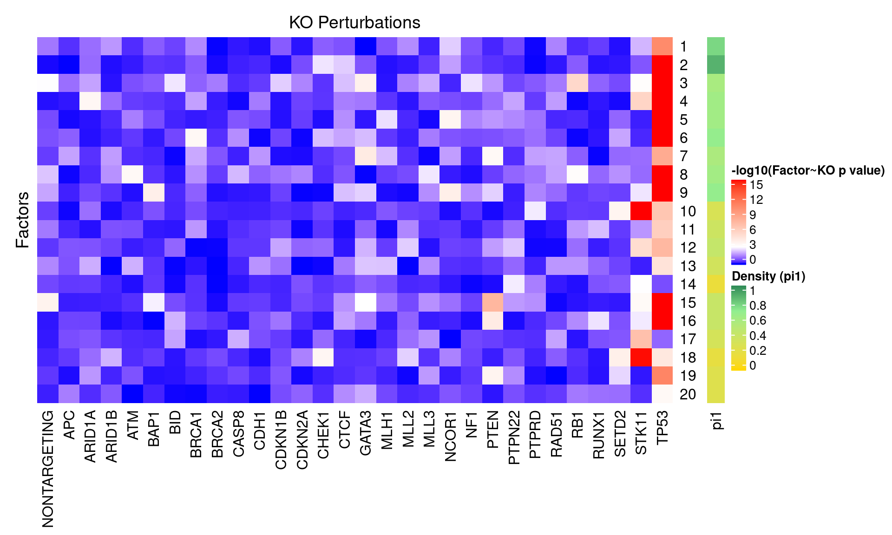
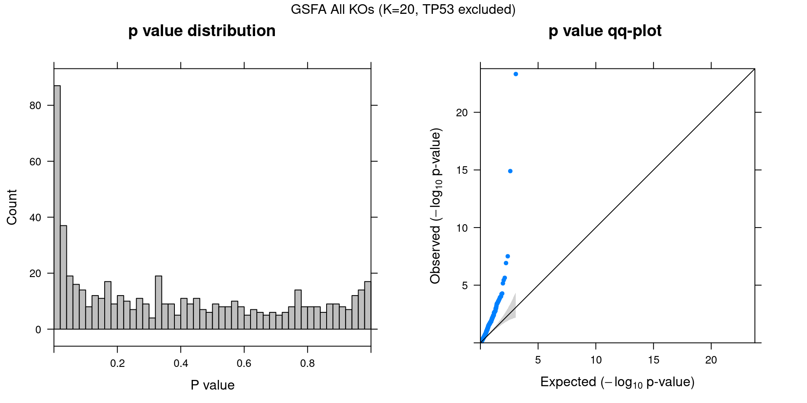
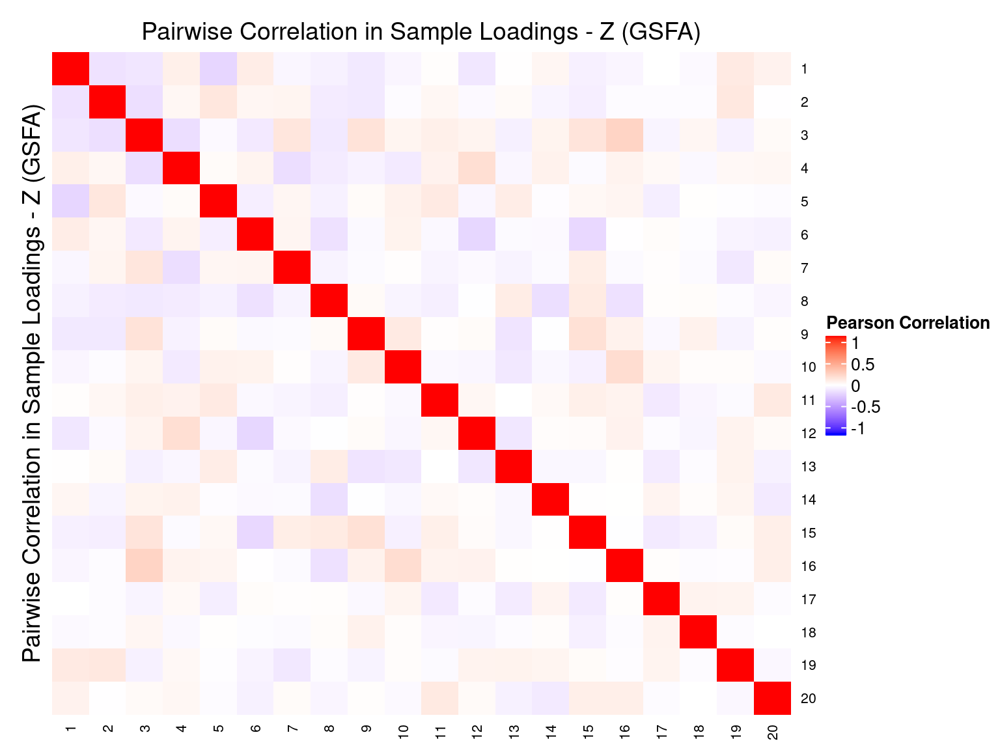
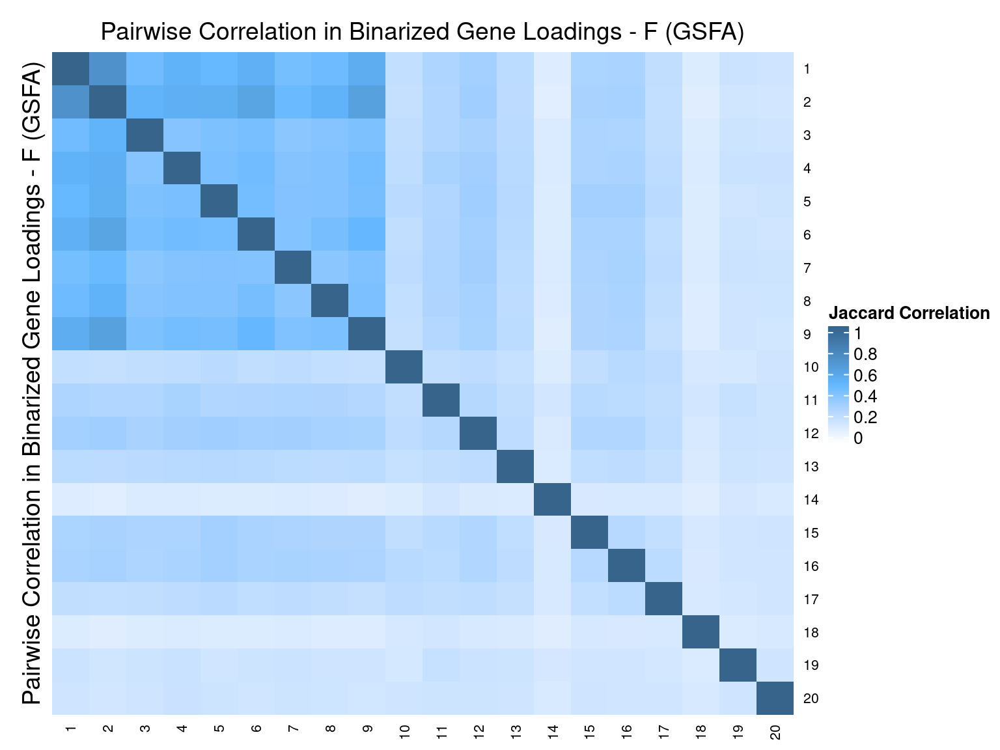

Guided Factor Analysis on MCF10A Treated
– Genes Filtered by Detection Rate
Yifan Zhou (zhouyf@uchicago.edu)
2020-11-09
1 Single cell expression data
CROP-seq data are from this paper: On the design of CRISPR-based single cell molecular screens, GEO accession: GSE108699.
Perturbations:
Knock-outs of 29 tumor-suppressor genes (TP53, …), 1 non-targeting control.
Cells:
MCF10A cells (normal human breast epithelial cells) with exposure to a DNA damaging agent, doxorubicin.
Only cells with gRNA readout were kept, resulted in 5584 cells.
Genes:
Only genes detected in > 5% of cells were kept, resulted in 9895 genes.
Normalization:
Seurat “LogNormalize”: log(count per 10K + 1).
Library size was regressed out, and the residuals were used as input.
2 Factor correlation results
Guided sparse factor analysis, with the \(G\) matrix being 30 types of KO conditions across cells.
2.1 SVD Initialization


2.2 Random Initialization
2.3 Difference btw Methods in Factor Estimation
For a pair of \(Z\) estimations from 2 inference methods, \(Z_1, Z_2\), we quantify the pairwise estimation difference as \(||Z_1Z_1^T - Z_2Z_2^T||_1/N^2\), where \(N\) is the number of rows (samples) in \(Z\).
2.4 Correlation btw Factors



3 Gene Ontology Enrichment Analysis
Genes w/ non-zero loadings vs all genes selected for factor analysis.
GO category: Biological Process.
3.1 PIP cutoff at 0.5
| ID | Description | GeneRatio | BgRatio | FoldChange | qvalue |
|---|---|---|---|---|---|
| GO:0098609 | cell-cell adhesion | 139/1878 | 315/8563 | 2.01 | 9.50e-16 |
| GO:0034330 | cell junction organization | 89/1878 | 178/8563 | 2.28 | 1.36e-13 |
| GO:0030198 | extracellular matrix organization | 73/1878 | 141/8563 | 2.36 | 4.19e-12 |
| GO:0034329 | cell junction assembly | 73/1878 | 148/8563 | 2.25 | 6.76e-11 |
| GO:0043062 | extracellular structure organization | 78/1878 | 163/8563 | 2.18 | 6.76e-11 |
| GO:0031589 | cell-substrate adhesion | 80/1878 | 174/8563 | 2.10 | 3.37e-10 |
| GO:0045216 | cell-cell junction organization | 40/1878 | 75/8563 | 2.43 | 3.39e-07 |
| GO:0030216 | keratinocyte differentiation | 46/1878 | 93/8563 | 2.26 | 4.18e-07 |
| GO:0007044 | cell-substrate junction assembly | 38/1878 | 71/8563 | 2.44 | 4.99e-07 |
| GO:0007160 | cell-matrix adhesion | 52/1878 | 115/8563 | 2.06 | 1.26e-06 |
| GO:0010810 | regulation of cell-substrate adhesion | 52/1878 | 116/8563 | 2.04 | 1.65e-06 |
| GO:0042445 | hormone metabolic process | 42/1878 | 86/8563 | 2.23 | 1.72e-06 |
| GO:0006613 | cotranslational protein targeting to membrane | 46/1878 | 98/8563 | 2.14 | 1.78e-06 |
| GO:0051146 | striated muscle cell differentiation | 51/1878 | 114/8563 | 2.04 | 2.20e-06 |
| GO:0006614 | SRP-dependent cotranslational protein targeting to membrane | 44/1878 | 94/8563 | 2.13 | 3.41e-06 |
| GO:0007229 | integrin-mediated signaling pathway | 28/1878 | 50/8563 | 2.55 | 7.18e-06 |
| GO:0045047 | protein targeting to ER | 47/1878 | 106/8563 | 2.02 | 8.47e-06 |
| GO:0034332 | adherens junction organization | 43/1878 | 94/8563 | 2.09 | 9.21e-06 |
| GO:0051017 | actin filament bundle assembly | 42/1878 | 92/8563 | 2.08 | 1.25e-05 |
| GO:0061572 | actin filament bundle organization | 42/1878 | 93/8563 | 2.06 | 1.71e-05 |
| GO:0031424 | keratinization | 25/1878 | 44/8563 | 2.59 | 1.78e-05 |
| GO:0007157 | heterophilic cell-cell adhesion via plasma membrane cell adhesion molecules | 11/1878 | 12/8563 | 4.18 | 1.82e-05 |
| GO:0070268 | cornification | 21/1878 | 34/8563 | 2.82 | 2.00e-05 |
| GO:0007043 | cell-cell junction assembly | 31/1878 | 61/8563 | 2.32 | 2.05e-05 |
| GO:1903039 | positive regulation of leukocyte cell-cell adhesion | 39/1878 | 86/8563 | 2.07 | 3.18e-05 |
| GO:0032350 | regulation of hormone metabolic process | 14/1878 | 19/8563 | 3.36 | 6.01e-05 |
| GO:0032602 | chemokine production | 21/1878 | 36/8563 | 2.66 | 6.39e-05 |
| GO:0002576 | platelet degranulation | 33/1878 | 71/8563 | 2.12 | 8.66e-05 |
| GO:0030239 | myofibril assembly | 15/1878 | 22/8563 | 3.11 | 1.00e-04 |
| GO:0050870 | positive regulation of T cell activation | 37/1878 | 84/8563 | 2.01 | 1.06e-04 |
| GO:0050819 | negative regulation of coagulation | 14/1878 | 20/8563 | 3.19 | 1.27e-04 |
| GO:0030042 | actin filament depolymerization | 18/1878 | 30/8563 | 2.74 | 1.53e-04 |
| GO:0098742 | cell-cell adhesion via plasma-membrane adhesion molecules | 32/1878 | 70/8563 | 2.08 | 1.66e-04 |
| GO:0035987 | endodermal cell differentiation | 15/1878 | 23/8563 | 2.97 | 1.99e-04 |
| GO:0045214 | sarcomere organization | 11/1878 | 14/8563 | 3.58 | 2.04e-04 |
| GO:0046885 | regulation of hormone biosynthetic process | 11/1878 | 14/8563 | 3.58 | 2.04e-04 |
| GO:0031581 | hemidesmosome assembly | 10/1878 | 12/8563 | 3.80 | 2.11e-04 |
| GO:0042098 | T cell proliferation | 33/1878 | 75/8563 | 2.01 | 2.89e-04 |
| GO:0010811 | positive regulation of cell-substrate adhesion | 29/1878 | 63/8563 | 2.10 | 3.21e-04 |
| GO:0006937 | regulation of muscle contraction | 28/1878 | 60/8563 | 2.13 | 3.23e-04 |
| GO:0030195 | negative regulation of blood coagulation | 13/1878 | 19/8563 | 3.12 | 3.30e-04 |
| GO:1900047 | negative regulation of hemostasis | 13/1878 | 19/8563 | 3.12 | 3.30e-04 |
| GO:0001706 | endoderm formation | 15/1878 | 24/8563 | 2.85 | 3.70e-04 |
| GO:0008016 | regulation of heart contraction | 31/1878 | 70/8563 | 2.02 | 4.02e-04 |
| GO:0046718 | viral entry into host cell | 31/1878 | 70/8563 | 2.02 | 4.02e-04 |
| GO:0045933 | positive regulation of muscle contraction | 12/1878 | 17/8563 | 3.22 | 4.05e-04 |
| GO:0034333 | adherens junction assembly | 29/1878 | 64/8563 | 2.07 | 4.19e-04 |
| GO:0022612 | gland morphogenesis | 27/1878 | 58/8563 | 2.12 | 4.32e-04 |
| GO:0042446 | hormone biosynthetic process | 19/1878 | 35/8563 | 2.48 | 4.60e-04 |
| GO:0030834 | regulation of actin filament depolymerization | 16/1878 | 27/8563 | 2.70 | 4.60e-04 |
| GO:0007156 | homophilic cell adhesion via plasma membrane adhesion molecules | 21/1878 | 41/8563 | 2.34 | 5.35e-04 |
| GO:0034109 | homotypic cell-cell adhesion | 21/1878 | 41/8563 | 2.34 | 5.35e-04 |
| GO:0022617 | extracellular matrix disassembly | 17/1878 | 30/8563 | 2.58 | 5.46e-04 |
| GO:0055002 | striated muscle cell development | 29/1878 | 65/8563 | 2.03 | 5.46e-04 |
| GO:0010927 | cellular component assembly involved in morphogenesis | 22/1878 | 44/8563 | 2.28 | 5.54e-04 |
| GO:0033559 | unsaturated fatty acid metabolic process | 23/1878 | 47/8563 | 2.23 | 5.73e-04 |
| GO:0090184 | positive regulation of kidney development | 9/1878 | 11/8563 | 3.73 | 6.06e-04 |
| GO:0050818 | regulation of coagulation | 18/1878 | 33/8563 | 2.49 | 6.23e-04 |
| GO:0046634 | regulation of alpha-beta T cell activation | 19/1878 | 36/8563 | 2.41 | 6.77e-04 |
| GO:0042129 | regulation of T cell proliferation | 27/1878 | 60/8563 | 2.05 | 7.53e-04 |
| GO:0032963 | collagen metabolic process | 21/1878 | 42/8563 | 2.28 | 7.53e-04 |
| GO:0061041 | regulation of wound healing | 26/1878 | 57/8563 | 2.08 | 7.63e-04 |
| GO:0002526 | acute inflammatory response | 23/1878 | 48/8563 | 2.18 | 7.81e-04 |
| GO:0030193 | regulation of blood coagulation | 17/1878 | 31/8563 | 2.50 | 8.30e-04 |
| GO:1900046 | regulation of hemostasis | 17/1878 | 31/8563 | 2.50 | 8.30e-04 |
| GO:0032355 | response to estradiol | 27/1878 | 61/8563 | 2.02 | 1.00e-03 |
| GO:0010043 | response to zinc ion | 13/1878 | 21/8563 | 2.82 | 1.08e-03 |
| GO:0031638 | zymogen activation | 16/1878 | 29/8563 | 2.52 | 1.16e-03 |
| GO:0032642 | regulation of chemokine production | 17/1878 | 32/8563 | 2.42 | 1.29e-03 |
| GO:0007045 | cell-substrate adherens junction assembly | 25/1878 | 56/8563 | 2.04 | 1.42e-03 |
| GO:0048041 | focal adhesion assembly | 25/1878 | 56/8563 | 2.04 | 1.42e-03 |
| GO:0014902 | myotube differentiation | 19/1878 | 38/8563 | 2.28 | 1.44e-03 |
| GO:0001704 | formation of primary germ layer | 24/1878 | 53/8563 | 2.06 | 1.44e-03 |
| GO:0006882 | cellular zinc ion homeostasis | 12/1878 | 19/8563 | 2.88 | 1.44e-03 |
| GO:0055069 | zinc ion homeostasis | 12/1878 | 19/8563 | 2.88 | 1.44e-03 |
| GO:0090183 | regulation of kidney development | 12/1878 | 19/8563 | 2.88 | 1.44e-03 |
| GO:0071706 | tumor necrosis factor superfamily cytokine production | 23/1878 | 50/8563 | 2.10 | 1.46e-03 |
| GO:0031639 | plasminogen activation | 9/1878 | 12/8563 | 3.42 | 1.47e-03 |
| GO:0048569 | post-embryonic animal organ development | 8/1878 | 10/8563 | 3.65 | 1.66e-03 |
| GO:0085029 | extracellular matrix assembly | 8/1878 | 10/8563 | 3.65 | 1.66e-03 |
| GO:0050854 | regulation of antigen receptor-mediated signaling pathway | 16/1878 | 30/8563 | 2.43 | 1.71e-03 |
| GO:0061045 | negative regulation of wound healing | 16/1878 | 30/8563 | 2.43 | 1.71e-03 |
| GO:2000514 | regulation of CD4-positive, alpha-beta T cell activation | 13/1878 | 22/8563 | 2.69 | 1.79e-03 |
| GO:0034754 | cellular hormone metabolic process | 22/1878 | 48/8563 | 2.09 | 1.96e-03 |
| GO:0046635 | positive regulation of alpha-beta T cell activation | 14/1878 | 25/8563 | 2.55 | 2.11e-03 |
| GO:0046637 | regulation of alpha-beta T cell differentiation | 15/1878 | 28/8563 | 2.44 | 2.36e-03 |
| GO:0072073 | kidney epithelium development | 23/1878 | 52/8563 | 2.02 | 2.51e-03 |
| GO:0007586 | digestion | 16/1878 | 31/8563 | 2.35 | 2.51e-03 |
| GO:0110110 | positive regulation of animal organ morphogenesis | 16/1878 | 31/8563 | 2.35 | 2.51e-03 |
| GO:0032640 | tumor necrosis factor production | 22/1878 | 49/8563 | 2.05 | 2.57e-03 |
| GO:1903845 | negative regulation of cellular response to transforming growth factor beta stimulus | 22/1878 | 49/8563 | 2.05 | 2.57e-03 |
| GO:0046631 | alpha-beta T cell activation | 21/1878 | 46/8563 | 2.08 | 2.63e-03 |
| GO:0001676 | long-chain fatty acid metabolic process | 20/1878 | 43/8563 | 2.12 | 2.65e-03 |
| GO:0007492 | endoderm development | 19/1878 | 40/8563 | 2.17 | 2.65e-03 |
| GO:0043297 | apical junction assembly | 19/1878 | 40/8563 | 2.17 | 2.65e-03 |
| GO:0006953 | acute-phase response | 9/1878 | 13/8563 | 3.16 | 2.98e-03 |
| GO:0006636 | unsaturated fatty acid biosynthetic process | 14/1878 | 26/8563 | 2.46 | 3.11e-03 |
| GO:0002456 | T cell mediated immunity | 21/1878 | 47/8563 | 2.04 | 3.41e-03 |
| GO:1903317 | regulation of protein maturation | 21/1878 | 47/8563 | 2.04 | 3.41e-03 |
| GO:2000379 | positive regulation of reactive oxygen species metabolic process | 21/1878 | 47/8563 | 2.04 | 3.41e-03 |
| GO:0033627 | cell adhesion mediated by integrin | 16/1878 | 32/8563 | 2.28 | 3.51e-03 |
| GO:0051153 | regulation of striated muscle cell differentiation | 20/1878 | 44/8563 | 2.07 | 3.51e-03 |
| GO:0006690 | icosanoid metabolic process | 19/1878 | 41/8563 | 2.11 | 3.58e-03 |
| GO:0045582 | positive regulation of T cell differentiation | 17/1878 | 35/8563 | 2.21 | 3.58e-03 |
| GO:1903035 | negative regulation of response to wounding | 17/1878 | 35/8563 | 2.21 | 3.58e-03 |
| GO:0006940 | regulation of smooth muscle contraction | 10/1878 | 16/8563 | 2.85 | 4.21e-03 |
| GO:0006939 | smooth muscle contraction | 15/1878 | 30/8563 | 2.28 | 4.84e-03 |
| GO:0035710 | CD4-positive, alpha-beta T cell activation | 15/1878 | 30/8563 | 2.28 | 4.84e-03 |
| GO:0070527 | platelet aggregation | 15/1878 | 30/8563 | 2.28 | 4.84e-03 |
| GO:1900024 | regulation of substrate adhesion-dependent cell spreading | 18/1878 | 39/8563 | 2.10 | 4.90e-03 |
| GO:0046209 | nitric oxide metabolic process | 16/1878 | 33/8563 | 2.21 | 4.91e-03 |
| GO:2001057 | reactive nitrogen species metabolic process | 16/1878 | 33/8563 | 2.21 | 4.91e-03 |
| GO:0030282 | bone mineralization | 17/1878 | 36/8563 | 2.15 | 4.91e-03 |
| GO:0043627 | response to estrogen | 17/1878 | 36/8563 | 2.15 | 4.91e-03 |
| GO:0030835 | negative regulation of actin filament depolymerization | 12/1878 | 22/8563 | 2.49 | 5.95e-03 |
| GO:0006096 | glycolytic process | 19/1878 | 43/8563 | 2.01 | 6.37e-03 |
| GO:0006757 | ATP generation from ADP | 19/1878 | 43/8563 | 2.01 | 6.37e-03 |
| GO:0045621 | positive regulation of lymphocyte differentiation | 19/1878 | 43/8563 | 2.01 | 6.37e-03 |
| GO:1901879 | regulation of protein depolymerization | 19/1878 | 43/8563 | 2.01 | 6.37e-03 |
| GO:0022600 | digestive system process | 14/1878 | 28/8563 | 2.28 | 6.76e-03 |
| GO:0032649 | regulation of interferon-gamma production | 14/1878 | 28/8563 | 2.28 | 6.76e-03 |
| GO:0046632 | alpha-beta T cell differentiation | 17/1878 | 37/8563 | 2.09 | 6.77e-03 |
| GO:0006809 | nitric oxide biosynthetic process | 15/1878 | 31/8563 | 2.21 | 6.87e-03 |
| GO:0032768 | regulation of monooxygenase activity | 15/1878 | 31/8563 | 2.21 | 6.87e-03 |
| GO:0030574 | collagen catabolic process | 8/1878 | 12/8563 | 3.04 | 7.52e-03 |
| GO:0010830 | regulation of myotube differentiation | 11/1878 | 20/8563 | 2.51 | 8.37e-03 |
| GO:0032233 | positive regulation of actin filament bundle assembly | 18/1878 | 41/8563 | 2.00 | 8.80e-03 |
| GO:0050868 | negative regulation of T cell activation | 18/1878 | 41/8563 | 2.00 | 8.80e-03 |
| GO:0006007 | glucose catabolic process | 12/1878 | 23/8563 | 2.38 | 8.94e-03 |
| GO:0019730 | antimicrobial humoral response | 12/1878 | 23/8563 | 2.38 | 8.94e-03 |
| GO:0030593 | neutrophil chemotaxis | 12/1878 | 23/8563 | 2.38 | 8.94e-03 |
| GO:0050918 | positive chemotaxis | 12/1878 | 23/8563 | 2.38 | 8.94e-03 |
| GO:1903524 | positive regulation of blood circulation | 12/1878 | 23/8563 | 2.38 | 8.94e-03 |
| GO:0006805 | xenobiotic metabolic process | 17/1878 | 38/8563 | 2.04 | 8.99e-03 |
| GO:1903426 | regulation of reactive oxygen species biosynthetic process | 17/1878 | 38/8563 | 2.04 | 8.99e-03 |
| GO:2001238 | positive regulation of extrinsic apoptotic signaling pathway | 17/1878 | 38/8563 | 2.04 | 8.99e-03 |
| GO:0019320 | hexose catabolic process | 16/1878 | 35/8563 | 2.08 | 9.26e-03 |
| GO:0032609 | interferon-gamma production | 15/1878 | 32/8563 | 2.14 | 9.40e-03 |
| GO:0032689 | negative regulation of interferon-gamma production | 7/1878 | 10/8563 | 3.19 | 9.55e-03 |
| GO:0045987 | positive regulation of smooth muscle contraction | 7/1878 | 10/8563 | 3.19 | 9.55e-03 |
| GO:0003044 | regulation of systemic arterial blood pressure mediated by a chemical signal | 9/1878 | 15/8563 | 2.74 | 9.70e-03 |
| GO:0050853 | B cell receptor signaling pathway | 9/1878 | 15/8563 | 2.74 | 9.70e-03 |
| GO:0032965 | regulation of collagen biosynthetic process | 10/1878 | 18/8563 | 2.53 | 1.11e-02 |
| GO:0043370 | regulation of CD4-positive, alpha-beta T cell differentiation | 10/1878 | 18/8563 | 2.53 | 1.11e-02 |
| GO:0010812 | negative regulation of cell-substrate adhesion | 16/1878 | 36/8563 | 2.03 | 1.21e-02 |
| GO:0045600 | positive regulation of fat cell differentiation | 16/1878 | 36/8563 | 2.03 | 1.21e-02 |
| GO:0046638 | positive regulation of alpha-beta T cell differentiation | 11/1878 | 21/8563 | 2.39 | 1.21e-02 |
| GO:0001657 | ureteric bud development | 15/1878 | 33/8563 | 2.07 | 1.24e-02 |
| GO:0070830 | bicellular tight junction assembly | 15/1878 | 33/8563 | 2.07 | 1.24e-02 |
| GO:0042130 | negative regulation of T cell proliferation | 12/1878 | 24/8563 | 2.28 | 1.26e-02 |
| GO:0070664 | negative regulation of leukocyte proliferation | 14/1878 | 30/8563 | 2.13 | 1.27e-02 |
| GO:1990266 | neutrophil migration | 13/1878 | 27/8563 | 2.20 | 1.28e-02 |
| GO:0050892 | intestinal absorption | 8/1878 | 13/8563 | 2.81 | 1.29e-02 |
| GO:0051180 | vitamin transport | 8/1878 | 13/8563 | 2.81 | 1.29e-02 |
| GO:0071280 | cellular response to copper ion | 8/1878 | 13/8563 | 2.81 | 1.29e-02 |
| GO:1902742 | apoptotic process involved in development | 8/1878 | 13/8563 | 2.81 | 1.29e-02 |
| GO:0008207 | C21-steroid hormone metabolic process | 9/1878 | 16/8563 | 2.56 | 1.53e-02 |
| GO:0045823 | positive regulation of heart contraction | 9/1878 | 16/8563 | 2.56 | 1.53e-02 |
| GO:0061844 | antimicrobial humoral immune response mediated by antimicrobial peptide | 9/1878 | 16/8563 | 2.56 | 1.53e-02 |
| GO:0086002 | cardiac muscle cell action potential involved in contraction | 9/1878 | 16/8563 | 2.56 | 1.53e-02 |
| GO:0032612 | interleukin-1 production | 15/1878 | 34/8563 | 2.01 | 1.63e-02 |
| GO:0032623 | interleukin-2 production | 15/1878 | 34/8563 | 2.01 | 1.63e-02 |
| GO:0055117 | regulation of cardiac muscle contraction | 15/1878 | 34/8563 | 2.01 | 1.63e-02 |
| GO:0060993 | kidney morphogenesis | 15/1878 | 34/8563 | 2.01 | 1.63e-02 |
| GO:0072163 | mesonephric epithelium development | 15/1878 | 34/8563 | 2.01 | 1.63e-02 |
| GO:0072164 | mesonephric tubule development | 15/1878 | 34/8563 | 2.01 | 1.63e-02 |
| GO:0120192 | tight junction assembly | 15/1878 | 34/8563 | 2.01 | 1.63e-02 |
| GO:0061615 | glycolytic process through fructose-6-phosphate | 10/1878 | 19/8563 | 2.40 | 1.66e-02 |
| GO:0061620 | glycolytic process through glucose-6-phosphate | 10/1878 | 19/8563 | 2.40 | 1.66e-02 |
| GO:0002088 | lens development in camera-type eye | 14/1878 | 31/8563 | 2.06 | 1.68e-02 |
| GO:0031663 | lipopolysaccharide-mediated signaling pathway | 14/1878 | 31/8563 | 2.06 | 1.68e-02 |
| GO:0032652 | regulation of interleukin-1 production | 14/1878 | 31/8563 | 2.06 | 1.68e-02 |
| GO:2001169 | regulation of ATP biosynthetic process | 14/1878 | 31/8563 | 2.06 | 1.68e-02 |
| GO:0010712 | regulation of collagen metabolic process | 11/1878 | 22/8563 | 2.28 | 1.70e-02 |
| GO:0033598 | mammary gland epithelial cell proliferation | 11/1878 | 22/8563 | 2.28 | 1.70e-02 |
| GO:0060389 | pathway-restricted SMAD protein phosphorylation | 11/1878 | 22/8563 | 2.28 | 1.70e-02 |
| GO:0051353 | positive regulation of oxidoreductase activity | 13/1878 | 28/8563 | 2.12 | 1.70e-02 |
| GO:0030049 | muscle filament sliding | 7/1878 | 11/8563 | 2.90 | 1.70e-02 |
| GO:0033275 | actin-myosin filament sliding | 7/1878 | 11/8563 | 2.90 | 1.70e-02 |
| GO:0042730 | fibrinolysis | 7/1878 | 11/8563 | 2.90 | 1.70e-02 |
| GO:0044342 | type B pancreatic cell proliferation | 7/1878 | 11/8563 | 2.90 | 1.70e-02 |
| GO:0045662 | negative regulation of myoblast differentiation | 7/1878 | 11/8563 | 2.90 | 1.70e-02 |
| GO:0046640 | regulation of alpha-beta T cell proliferation | 7/1878 | 11/8563 | 2.90 | 1.70e-02 |
| GO:0046697 | decidualization | 7/1878 | 11/8563 | 2.90 | 1.70e-02 |
| GO:1900115 | extracellular regulation of signal transduction | 7/1878 | 11/8563 | 2.90 | 1.70e-02 |
| GO:1900116 | extracellular negative regulation of signal transduction | 7/1878 | 11/8563 | 2.90 | 1.70e-02 |
| GO:0043367 | CD4-positive, alpha-beta T cell differentiation | 12/1878 | 25/8563 | 2.19 | 1.71e-02 |
| GO:0045428 | regulation of nitric oxide biosynthetic process | 12/1878 | 25/8563 | 2.19 | 1.71e-02 |
| GO:0046688 | response to copper ion | 12/1878 | 25/8563 | 2.19 | 1.71e-02 |
| GO:0010714 | positive regulation of collagen metabolic process | 8/1878 | 14/8563 | 2.61 | 2.08e-02 |
| GO:0070306 | lens fiber cell differentiation | 8/1878 | 14/8563 | 2.61 | 2.08e-02 |
| GO:1903055 | positive regulation of extracellular matrix organization | 8/1878 | 14/8563 | 2.61 | 2.08e-02 |
| GO:0001755 | neural crest cell migration | 9/1878 | 17/8563 | 2.41 | 2.30e-02 |
| GO:0045616 | regulation of keratinocyte differentiation | 12/1878 | 26/8563 | 2.10 | 2.37e-02 |
| GO:0050886 | endocrine process | 12/1878 | 26/8563 | 2.10 | 2.37e-02 |
| GO:0010939 | regulation of necrotic cell death | 10/1878 | 20/8563 | 2.28 | 2.38e-02 |
| GO:0010955 | negative regulation of protein processing | 10/1878 | 20/8563 | 2.28 | 2.38e-02 |
| GO:0051693 | actin filament capping | 10/1878 | 20/8563 | 2.28 | 2.38e-02 |
| GO:1903318 | negative regulation of protein maturation | 10/1878 | 20/8563 | 2.28 | 2.38e-02 |
| GO:0034113 | heterotypic cell-cell adhesion | 11/1878 | 23/8563 | 2.18 | 2.39e-02 |
| GO:1903053 | regulation of extracellular matrix organization | 11/1878 | 23/8563 | 2.18 | 2.39e-02 |
| GO:0003417 | growth plate cartilage development | 7/1878 | 12/8563 | 2.66 | 2.87e-02 |
| GO:0046633 | alpha-beta T cell proliferation | 7/1878 | 12/8563 | 2.66 | 2.87e-02 |
| GO:0055078 | sodium ion homeostasis | 7/1878 | 12/8563 | 2.66 | 2.87e-02 |
| GO:0060547 | negative regulation of necrotic cell death | 7/1878 | 12/8563 | 2.66 | 2.87e-02 |
| GO:0060561 | apoptotic process involved in morphogenesis | 7/1878 | 12/8563 | 2.66 | 2.87e-02 |
| GO:2000515 | negative regulation of CD4-positive, alpha-beta T cell activation | 7/1878 | 12/8563 | 2.66 | 2.87e-02 |
| GO:0032651 | regulation of interleukin-1 beta production | 12/1878 | 27/8563 | 2.03 | 3.14e-02 |
| GO:0002369 | T cell cytokine production | 8/1878 | 15/8563 | 2.43 | 3.17e-02 |
| GO:0034975 | protein folding in endoplasmic reticulum | 8/1878 | 15/8563 | 2.43 | 3.17e-02 |
| GO:0035767 | endothelial cell chemotaxis | 8/1878 | 15/8563 | 2.43 | 3.17e-02 |
| GO:0045577 | regulation of B cell differentiation | 8/1878 | 15/8563 | 2.43 | 3.17e-02 |
| GO:0032760 | positive regulation of tumor necrosis factor production | 11/1878 | 24/8563 | 2.09 | 3.22e-02 |
| GO:0043616 | keratinocyte proliferation | 11/1878 | 24/8563 | 2.09 | 3.22e-02 |
| GO:0050999 | regulation of nitric-oxide synthase activity | 11/1878 | 24/8563 | 2.09 | 3.22e-02 |
| GO:1903557 | positive regulation of tumor necrosis factor superfamily cytokine production | 11/1878 | 24/8563 | 2.09 | 3.22e-02 |
| GO:1905207 | regulation of cardiocyte differentiation | 11/1878 | 24/8563 | 2.09 | 3.22e-02 |
| GO:0006735 | NADH regeneration | 9/1878 | 18/8563 | 2.28 | 3.23e-02 |
| GO:0006929 | substrate-dependent cell migration | 9/1878 | 18/8563 | 2.28 | 3.23e-02 |
| GO:0038084 | vascular endothelial growth factor signaling pathway | 9/1878 | 18/8563 | 2.28 | 3.23e-02 |
| GO:0061621 | canonical glycolysis | 9/1878 | 18/8563 | 2.28 | 3.23e-02 |
| GO:0061718 | glucose catabolic process to pyruvate | 9/1878 | 18/8563 | 2.28 | 3.23e-02 |
| GO:0071634 | regulation of transforming growth factor beta production | 9/1878 | 18/8563 | 2.28 | 3.23e-02 |
| GO:0001844 | protein insertion into mitochondrial membrane involved in apoptotic signaling pathway | 10/1878 | 21/8563 | 2.17 | 3.23e-02 |
| GO:0032722 | positive regulation of chemokine production | 10/1878 | 21/8563 | 2.17 | 3.23e-02 |
| GO:0032964 | collagen biosynthetic process | 10/1878 | 21/8563 | 2.17 | 3.23e-02 |
| GO:0044319 | wound healing, spreading of cells | 10/1878 | 21/8563 | 2.17 | 3.23e-02 |
| GO:0090505 | epiboly involved in wound healing | 10/1878 | 21/8563 | 2.17 | 3.23e-02 |
| GO:0001990 | regulation of systemic arterial blood pressure by hormone | 6/1878 | 10/8563 | 2.74 | 3.85e-02 |
| GO:0003401 | axis elongation | 6/1878 | 10/8563 | 2.74 | 3.85e-02 |
| GO:0010226 | response to lithium ion | 6/1878 | 10/8563 | 2.74 | 3.85e-02 |
| GO:0031640 | killing of cells of other organism | 6/1878 | 10/8563 | 2.74 | 3.85e-02 |
| GO:0043371 | negative regulation of CD4-positive, alpha-beta T cell differentiation | 6/1878 | 10/8563 | 2.74 | 3.85e-02 |
| GO:0044364 | disruption of cells of other organism | 6/1878 | 10/8563 | 2.74 | 3.85e-02 |
| GO:0048012 | hepatocyte growth factor receptor signaling pathway | 6/1878 | 10/8563 | 2.74 | 3.85e-02 |
| GO:0050857 | positive regulation of antigen receptor-mediated signaling pathway | 6/1878 | 10/8563 | 2.74 | 3.85e-02 |
| GO:0060546 | negative regulation of necroptotic process | 6/1878 | 10/8563 | 2.74 | 3.85e-02 |
| GO:0060575 | intestinal epithelial cell differentiation | 6/1878 | 10/8563 | 2.74 | 3.85e-02 |
| GO:0060841 | venous blood vessel development | 6/1878 | 10/8563 | 2.74 | 3.85e-02 |
| GO:0071542 | dopaminergic neuron differentiation | 6/1878 | 10/8563 | 2.74 | 3.85e-02 |
| GO:0090382 | phagosome maturation | 6/1878 | 10/8563 | 2.74 | 3.85e-02 |
| GO:0019748 | secondary metabolic process | 11/1878 | 25/8563 | 2.01 | 4.18e-02 |
| GO:0030500 | regulation of bone mineralization | 11/1878 | 25/8563 | 2.01 | 4.18e-02 |
| GO:0002026 | regulation of the force of heart contraction | 7/1878 | 13/8563 | 2.46 | 4.32e-02 |
| GO:0032967 | positive regulation of collagen biosynthetic process | 7/1878 | 13/8563 | 2.46 | 4.32e-02 |
| GO:0034142 | toll-like receptor 4 signaling pathway | 7/1878 | 13/8563 | 2.46 | 4.32e-02 |
| GO:0042088 | T-helper 1 type immune response | 7/1878 | 13/8563 | 2.46 | 4.32e-02 |
| GO:0060055 | angiogenesis involved in wound healing | 7/1878 | 13/8563 | 2.46 | 4.32e-02 |
| GO:0060544 | regulation of necroptotic process | 7/1878 | 13/8563 | 2.46 | 4.32e-02 |
| GO:0060669 | embryonic placenta morphogenesis | 7/1878 | 13/8563 | 2.46 | 4.32e-02 |
| GO:1900025 | negative regulation of substrate adhesion-dependent cell spreading | 7/1878 | 13/8563 | 2.46 | 4.32e-02 |
| GO:1900449 | regulation of glutamate receptor signaling pathway | 7/1878 | 13/8563 | 2.46 | 4.32e-02 |
| GO:0014009 | glial cell proliferation | 10/1878 | 22/8563 | 2.07 | 4.33e-02 |
| GO:0035088 | establishment or maintenance of apical/basal cell polarity | 10/1878 | 22/8563 | 2.07 | 4.33e-02 |
| GO:0045599 | negative regulation of fat cell differentiation | 10/1878 | 22/8563 | 2.07 | 4.33e-02 |
| GO:0051155 | positive regulation of striated muscle cell differentiation | 10/1878 | 22/8563 | 2.07 | 4.33e-02 |
| GO:0061245 | establishment or maintenance of bipolar cell polarity | 10/1878 | 22/8563 | 2.07 | 4.33e-02 |
| GO:0090504 | epiboly | 10/1878 | 22/8563 | 2.07 | 4.33e-02 |
| GO:2000351 | regulation of endothelial cell apoptotic process | 10/1878 | 22/8563 | 2.07 | 4.33e-02 |
| GO:0001893 | maternal placenta development | 9/1878 | 19/8563 | 2.16 | 4.41e-02 |
| GO:0043243 | positive regulation of protein complex disassembly | 9/1878 | 19/8563 | 2.16 | 4.41e-02 |
| GO:0071604 | transforming growth factor beta production | 9/1878 | 19/8563 | 2.16 | 4.41e-02 |
| GO:1900739 | regulation of protein insertion into mitochondrial membrane involved in apoptotic signaling pathway | 9/1878 | 19/8563 | 2.16 | 4.41e-02 |
| GO:1900740 | positive regulation of protein insertion into mitochondrial membrane involved in apoptotic signaling pathway | 9/1878 | 19/8563 | 2.16 | 4.41e-02 |
| GO:0000038 | very long-chain fatty acid metabolic process | 8/1878 | 16/8563 | 2.28 | 4.41e-02 |
| GO:0030947 | regulation of vascular endothelial growth factor receptor signaling pathway | 8/1878 | 16/8563 | 2.28 | 4.41e-02 |
| GO:0050798 | activated T cell proliferation | 8/1878 | 16/8563 | 2.28 | 4.41e-02 |
| GO:0051385 | response to mineralocorticoid | 8/1878 | 16/8563 | 2.28 | 4.41e-02 |
| GO:0071526 | semaphorin-plexin signaling pathway | 8/1878 | 16/8563 | 2.28 | 4.41e-02 |
| GO:0097066 | response to thyroid hormone | 8/1878 | 16/8563 | 2.28 | 4.41e-02 |
| GO:1902991 | regulation of amyloid precursor protein catabolic process | 8/1878 | 16/8563 | 2.28 | 4.41e-02 |
| GO:1904645 | response to amyloid-beta | 8/1878 | 16/8563 | 2.28 | 4.41e-02 |
| ID | Description | GeneRatio | BgRatio | FoldChange | qvalue |
|---|---|---|---|---|---|
| GO:0006614 | SRP-dependent cotranslational protein targeting to membrane | 69/2447 | 94/8563 | 2.57 | 7.87e-16 |
| GO:0045047 | protein targeting to ER | 74/2447 | 106/8563 | 2.44 | 1.76e-15 |
| GO:0006613 | cotranslational protein targeting to membrane | 70/2447 | 98/8563 | 2.50 | 1.76e-15 |
| GO:0022900 | electron transport chain | 91/2447 | 143/8563 | 2.23 | 1.84e-15 |
| GO:0006119 | oxidative phosphorylation | 76/2447 | 112/8563 | 2.37 | 4.17e-15 |
| GO:0072599 | establishment of protein localization to endoplasmic reticulum | 74/2447 | 109/8563 | 2.38 | 9.20e-15 |
| GO:0042773 | ATP synthesis coupled electron transport | 58/2447 | 80/8563 | 2.54 | 2.03e-13 |
| GO:0042775 | mitochondrial ATP synthesis coupled electron transport | 57/2447 | 79/8563 | 2.52 | 4.65e-13 |
| GO:0000184 | nuclear-transcribed mRNA catabolic process, nonsense-mediated decay | 74/2447 | 115/8563 | 2.25 | 4.97e-13 |
| GO:0022904 | respiratory electron transport chain | 63/2447 | 93/8563 | 2.37 | 1.57e-12 |
| GO:0070972 | protein localization to endoplasmic reticulum | 78/2447 | 128/8563 | 2.13 | 5.03e-12 |
| GO:0006120 | mitochondrial electron transport, NADH to ubiquinone | 38/2447 | 47/8563 | 2.83 | 2.91e-11 |
| GO:0070125 | mitochondrial translational elongation | 55/2447 | 84/8563 | 2.29 | 3.15e-10 |
| GO:0033108 | mitochondrial respiratory chain complex assembly | 60/2447 | 95/8563 | 2.21 | 3.15e-10 |
| GO:0010257 | NADH dehydrogenase complex assembly | 44/2447 | 64/8563 | 2.41 | 3.28e-09 |
| GO:0032981 | mitochondrial respiratory chain complex I assembly | 44/2447 | 64/8563 | 2.41 | 3.28e-09 |
| GO:0070126 | mitochondrial translational termination | 53/2447 | 85/8563 | 2.18 | 7.90e-09 |
| GO:0006415 | translational termination | 55/2447 | 96/8563 | 2.00 | 2.92e-07 |
| GO:0015985 | energy coupled proton transport, down electrochemical gradient | 16/2447 | 21/8563 | 2.67 | 4.53e-04 |
| GO:0015986 | ATP synthesis coupled proton transport | 16/2447 | 21/8563 | 2.67 | 4.53e-04 |
| GO:0007339 | binding of sperm to zona pellucida | 12/2447 | 14/8563 | 3.00 | 7.19e-04 |
| GO:0008037 | cell recognition | 27/2447 | 47/8563 | 2.01 | 1.50e-03 |
| GO:0042407 | cristae formation | 20/2447 | 32/8563 | 2.19 | 2.85e-03 |
| GO:0001732 | formation of cytoplasmic translation initiation complex | 10/2447 | 12/8563 | 2.92 | 5.30e-03 |
| GO:0035036 | sperm-egg recognition | 13/2447 | 18/8563 | 2.53 | 5.94e-03 |
| GO:1904872 | regulation of telomerase RNA localization to Cajal body | 13/2447 | 18/8563 | 2.53 | 5.94e-03 |
| GO:0099132 | ATP hydrolysis coupled cation transmembrane transport | 21/2447 | 36/8563 | 2.04 | 6.59e-03 |
| GO:0071349 | cellular response to interleukin-12 | 20/2447 | 34/8563 | 2.06 | 7.50e-03 |
| GO:0035722 | interleukin-12-mediated signaling pathway | 19/2447 | 32/8563 | 2.08 | 8.97e-03 |
| GO:0002673 | regulation of acute inflammatory response | 15/2447 | 23/8563 | 2.28 | 9.25e-03 |
| GO:0090670 | RNA localization to Cajal body | 13/2447 | 19/8563 | 2.39 | 1.13e-02 |
| GO:0090671 | telomerase RNA localization to Cajal body | 13/2447 | 19/8563 | 2.39 | 1.13e-02 |
| GO:0090672 | telomerase RNA localization | 13/2447 | 19/8563 | 2.39 | 1.13e-02 |
| GO:0090685 | RNA localization to nucleus | 13/2447 | 19/8563 | 2.39 | 1.13e-02 |
| GO:0042776 | mitochondrial ATP synthesis coupled proton transport | 12/2447 | 17/8563 | 2.47 | 1.22e-02 |
| GO:0000028 | ribosomal small subunit assembly | 11/2447 | 15/8563 | 2.57 | 1.27e-02 |
| GO:1904874 | positive regulation of telomerase RNA localization to Cajal body | 11/2447 | 15/8563 | 2.57 | 1.27e-02 |
| GO:0009988 | cell-cell recognition | 15/2447 | 24/8563 | 2.19 | 1.63e-02 |
| GO:0033238 | regulation of cellular amine metabolic process | 10/2447 | 14/8563 | 2.50 | 2.80e-02 |
| GO:0031640 | killing of cells of other organism | 8/2447 | 10/8563 | 2.80 | 2.80e-02 |
| GO:0044364 | disruption of cells of other organism | 8/2447 | 10/8563 | 2.80 | 2.80e-02 |
| GO:1903405 | protein localization to nuclear body | 8/2447 | 10/8563 | 2.80 | 2.80e-02 |
| GO:1904851 | positive regulation of establishment of protein localization to telomere | 8/2447 | 10/8563 | 2.80 | 2.80e-02 |
| GO:1904867 | protein localization to Cajal body | 8/2447 | 10/8563 | 2.80 | 2.80e-02 |
| GO:1904816 | positive regulation of protein localization to chromosome, telomeric region | 9/2447 | 12/8563 | 2.62 | 2.81e-02 |
| GO:1990173 | protein localization to nucleoplasm | 9/2447 | 12/8563 | 2.62 | 2.81e-02 |
| GO:0015988 | energy coupled proton transmembrane transport, against electrochemical gradient | 14/2447 | 23/8563 | 2.13 | 2.96e-02 |
| GO:0042743 | hydrogen peroxide metabolic process | 14/2447 | 24/8563 | 2.04 | 4.74e-02 |
| ID | Description | GeneRatio | BgRatio | FoldChange | qvalue |
|---|---|---|---|---|---|
| GO:0031424 | keratinization | 33/2932 | 44/8563 | 2.19 | 8.06e-06 |
| GO:0034109 | homotypic cell-cell adhesion | 29/2932 | 41/8563 | 2.07 | 1.71e-04 |
| GO:0031581 | hemidesmosome assembly | 12/2932 | 12/8563 | 2.92 | 2.15e-04 |
| GO:0033627 | cell adhesion mediated by integrin | 24/2932 | 32/8563 | 2.19 | 2.29e-04 |
| GO:0070527 | platelet aggregation | 22/2932 | 30/8563 | 2.14 | 7.67e-04 |
| GO:0070268 | cornification | 24/2932 | 34/8563 | 2.06 | 8.60e-04 |
| GO:0050818 | regulation of coagulation | 23/2932 | 33/8563 | 2.04 | 1.57e-03 |
| GO:0035767 | endothelial cell chemotaxis | 13/2932 | 15/8563 | 2.53 | 1.86e-03 |
| GO:0042776 | mitochondrial ATP synthesis coupled proton transport | 14/2932 | 17/8563 | 2.41 | 2.52e-03 |
| GO:0022617 | extracellular matrix disassembly | 21/2932 | 30/8563 | 2.04 | 2.59e-03 |
| GO:0015985 | energy coupled proton transport, down electrochemical gradient | 16/2932 | 21/8563 | 2.23 | 3.44e-03 |
| GO:0015986 | ATP synthesis coupled proton transport | 16/2932 | 21/8563 | 2.23 | 3.44e-03 |
| GO:0034113 | heterotypic cell-cell adhesion | 17/2932 | 23/8563 | 2.16 | 3.74e-03 |
| GO:0018149 | peptide cross-linking | 14/2932 | 18/8563 | 2.27 | 5.63e-03 |
| GO:0010955 | negative regulation of protein processing | 15/2932 | 20/8563 | 2.19 | 6.35e-03 |
| GO:1903318 | negative regulation of protein maturation | 15/2932 | 20/8563 | 2.19 | 6.35e-03 |
| GO:0033628 | regulation of cell adhesion mediated by integrin | 16/2932 | 22/8563 | 2.12 | 6.81e-03 |
| GO:0035019 | somatic stem cell population maintenance | 16/2932 | 22/8563 | 2.12 | 6.81e-03 |
| GO:0010043 | response to zinc ion | 15/2932 | 21/8563 | 2.09 | 1.20e-02 |
| GO:0031639 | plasminogen activation | 10/2932 | 12/8563 | 2.43 | 1.37e-02 |
| GO:1905048 | regulation of metallopeptidase activity | 10/2932 | 12/8563 | 2.43 | 1.37e-02 |
| GO:2001259 | positive regulation of cation channel activity | 12/2932 | 16/8563 | 2.19 | 1.80e-02 |
| GO:0050819 | negative regulation of coagulation | 14/2932 | 20/8563 | 2.04 | 1.94e-02 |
| GO:0030049 | muscle filament sliding | 9/2932 | 11/8563 | 2.39 | 2.57e-02 |
| GO:0033275 | actin-myosin filament sliding | 9/2932 | 11/8563 | 2.39 | 2.57e-02 |
| GO:2000811 | negative regulation of anoikis | 9/2932 | 11/8563 | 2.39 | 2.57e-02 |
| GO:0071711 | basement membrane organization | 10/2932 | 13/8563 | 2.25 | 3.00e-02 |
| GO:0036475 | neuron death in response to oxidative stress | 12/2932 | 17/8563 | 2.06 | 3.35e-02 |
| GO:0036499 | PERK-mediated unfolded protein response | 12/2932 | 17/8563 | 2.06 | 3.35e-02 |
| GO:0006465 | signal peptide processing | 8/2932 | 10/8563 | 2.34 | 4.91e-02 |
| GO:0048569 | post-embryonic animal organ development | 8/2932 | 10/8563 | 2.34 | 4.91e-02 |
| ID | Description | GeneRatio | BgRatio | FoldChange | qvalue |
|---|---|---|---|---|---|
| GO:0006614 | SRP-dependent cotranslational protein targeting to membrane | 69/2146 | 94/8563 | 2.93 | 2.56e-19 |
| GO:0045047 | protein targeting to ER | 74/2146 | 106/8563 | 2.79 | 5.22e-19 |
| GO:0006613 | cotranslational protein targeting to membrane | 70/2146 | 98/8563 | 2.85 | 5.50e-19 |
| GO:0072599 | establishment of protein localization to endoplasmic reticulum | 75/2146 | 109/8563 | 2.75 | 5.50e-19 |
| GO:0070972 | protein localization to endoplasmic reticulum | 80/2146 | 128/8563 | 2.49 | 1.77e-16 |
| GO:0000184 | nuclear-transcribed mRNA catabolic process, nonsense-mediated decay | 73/2146 | 115/8563 | 2.53 | 1.59e-15 |
| GO:0006413 | translational initiation | 92/2146 | 174/8563 | 2.11 | 1.19e-12 |
| GO:0006612 | protein targeting to membrane | 82/2146 | 154/8563 | 2.12 | 2.14e-11 |
| GO:0006749 | glutathione metabolic process | 21/2146 | 27/8563 | 3.10 | 2.09e-06 |
| GO:0007338 | single fertilization | 25/2146 | 46/8563 | 2.17 | 1.71e-03 |
| GO:0007586 | digestion | 17/2146 | 31/8563 | 2.19 | 1.98e-02 |
| GO:0031581 | hemidesmosome assembly | 9/2146 | 12/8563 | 2.99 | 2.07e-02 |
| GO:0002026 | regulation of the force of heart contraction | 9/2146 | 13/8563 | 2.76 | 4.03e-02 |
| GO:0022600 | digestive system process | 15/2146 | 28/8563 | 2.14 | 4.10e-02 |
| GO:0030049 | muscle filament sliding | 8/2146 | 11/8563 | 2.90 | 4.18e-02 |
| GO:0033275 | actin-myosin filament sliding | 8/2146 | 11/8563 | 2.90 | 4.18e-02 |
| GO:0045662 | negative regulation of myoblast differentiation | 8/2146 | 11/8563 | 2.90 | 4.18e-02 |
| GO:0006007 | glucose catabolic process | 13/2146 | 23/8563 | 2.26 | 4.18e-02 |
| GO:0035036 | sperm-egg recognition | 11/2146 | 18/8563 | 2.44 | 4.18e-02 |
| ID | Description | GeneRatio | BgRatio | FoldChange | qvalue |
|---|---|---|---|---|---|
| GO:0006614 | SRP-dependent cotranslational protein targeting to membrane | 72/1029 | 94/8563 | 6.37 | 2.79e-44 |
| GO:0006613 | cotranslational protein targeting to membrane | 73/1029 | 98/8563 | 6.20 | 8.51e-44 |
| GO:0045047 | protein targeting to ER | 76/1029 | 106/8563 | 5.97 | 8.51e-44 |
| GO:0072599 | establishment of protein localization to endoplasmic reticulum | 77/1029 | 109/8563 | 5.88 | 9.36e-44 |
| GO:0070972 | protein localization to endoplasmic reticulum | 81/1029 | 128/8563 | 5.27 | 1.40e-40 |
| GO:0006413 | translational initiation | 94/1029 | 174/8563 | 4.50 | 3.35e-39 |
| GO:0000184 | nuclear-transcribed mRNA catabolic process, nonsense-mediated decay | 75/1029 | 115/8563 | 5.43 | 6.27e-39 |
| GO:0006612 | protein targeting to membrane | 79/1029 | 154/8563 | 4.27 | 1.38e-30 |
| GO:0006402 | mRNA catabolic process | 101/1029 | 263/8563 | 3.20 | 2.37e-26 |
| GO:0000956 | nuclear-transcribed mRNA catabolic process | 82/1029 | 188/8563 | 3.63 | 1.44e-25 |
| GO:0006401 | RNA catabolic process | 102/1029 | 285/8563 | 2.98 | 8.16e-24 |
| GO:0090150 | establishment of protein localization to membrane | 92/1029 | 241/8563 | 3.18 | 1.03e-23 |
| GO:0034655 | nucleobase-containing compound catabolic process | 122/1029 | 410/8563 | 2.48 | 1.14e-20 |
| GO:0044270 | cellular nitrogen compound catabolic process | 124/1029 | 425/8563 | 2.43 | 2.89e-20 |
| GO:0006605 | protein targeting | 107/1029 | 338/8563 | 2.63 | 2.89e-20 |
| GO:0046700 | heterocycle catabolic process | 122/1029 | 425/8563 | 2.39 | 2.87e-19 |
| GO:0019439 | aromatic compound catabolic process | 122/1029 | 432/8563 | 2.35 | 1.24e-18 |
| GO:1901361 | organic cyclic compound catabolic process | 123/1029 | 444/8563 | 2.31 | 4.73e-18 |
| GO:0072657 | protein localization to membrane | 113/1029 | 395/8563 | 2.38 | 1.20e-17 |
| GO:0072594 | establishment of protein localization to organelle | 117/1029 | 433/8563 | 2.25 | 3.46e-16 |
| GO:0002181 | cytoplasmic translation | 38/1029 | 79/8563 | 4.00 | 4.13e-13 |
| GO:0009126 | purine nucleoside monophosphate metabolic process | 63/1029 | 218/8563 | 2.40 | 1.54e-09 |
| GO:0009167 | purine ribonucleoside monophosphate metabolic process | 63/1029 | 218/8563 | 2.40 | 1.54e-09 |
| GO:0009123 | nucleoside monophosphate metabolic process | 68/1029 | 245/8563 | 2.31 | 1.67e-09 |
| GO:0009161 | ribonucleoside monophosphate metabolic process | 65/1029 | 230/8563 | 2.35 | 1.96e-09 |
| GO:0009144 | purine nucleoside triphosphate metabolic process | 62/1029 | 219/8563 | 2.36 | 5.26e-09 |
| GO:0046034 | ATP metabolic process | 56/1029 | 188/8563 | 2.48 | 5.27e-09 |
| GO:0009141 | nucleoside triphosphate metabolic process | 64/1029 | 233/8563 | 2.29 | 9.72e-09 |
| GO:0009205 | purine ribonucleoside triphosphate metabolic process | 60/1029 | 212/8563 | 2.36 | 1.00e-08 |
| GO:0009199 | ribonucleoside triphosphate metabolic process | 60/1029 | 217/8563 | 2.30 | 2.73e-08 |
| GO:0006119 | oxidative phosphorylation | 39/1029 | 112/8563 | 2.90 | 2.94e-08 |
| GO:1902600 | proton transmembrane transport | 32/1029 | 91/8563 | 2.93 | 8.01e-07 |
| GO:0015985 | energy coupled proton transport, down electrochemical gradient | 13/1029 | 21/8563 | 5.15 | 7.62e-06 |
| GO:0015986 | ATP synthesis coupled proton transport | 13/1029 | 21/8563 | 5.15 | 7.62e-06 |
| GO:0022618 | ribonucleoprotein complex assembly | 51/1029 | 203/8563 | 2.09 | 1.34e-05 |
| GO:0042255 | ribosome assembly | 22/1029 | 56/8563 | 3.27 | 1.54e-05 |
| GO:0071826 | ribonucleoprotein complex subunit organization | 53/1029 | 216/8563 | 2.04 | 1.67e-05 |
| GO:0042775 | mitochondrial ATP synthesis coupled electron transport | 27/1029 | 79/8563 | 2.84 | 1.80e-05 |
| GO:0045333 | cellular respiration | 41/1029 | 151/8563 | 2.26 | 2.24e-05 |
| GO:0042773 | ATP synthesis coupled electron transport | 27/1029 | 80/8563 | 2.81 | 2.31e-05 |
| GO:0022900 | electron transport chain | 39/1029 | 143/8563 | 2.27 | 3.64e-05 |
| GO:0009206 | purine ribonucleoside triphosphate biosynthetic process | 28/1029 | 88/8563 | 2.65 | 5.24e-05 |
| GO:0009145 | purine nucleoside triphosphate biosynthetic process | 28/1029 | 89/8563 | 2.62 | 6.66e-05 |
| GO:0009142 | nucleoside triphosphate biosynthetic process | 30/1029 | 101/8563 | 2.47 | 1.05e-04 |
| GO:0009127 | purine nucleoside monophosphate biosynthetic process | 30/1029 | 102/8563 | 2.45 | 1.28e-04 |
| GO:0009168 | purine ribonucleoside monophosphate biosynthetic process | 30/1029 | 102/8563 | 2.45 | 1.28e-04 |
| GO:0009124 | nucleoside monophosphate biosynthetic process | 34/1029 | 124/8563 | 2.28 | 1.54e-04 |
| GO:0009201 | ribonucleoside triphosphate biosynthetic process | 28/1029 | 93/8563 | 2.51 | 1.60e-04 |
| GO:0022904 | respiratory electron transport chain | 28/1029 | 93/8563 | 2.51 | 1.60e-04 |
| GO:0009156 | ribonucleoside monophosphate biosynthetic process | 32/1029 | 114/8563 | 2.34 | 1.67e-04 |
| GO:0006754 | ATP biosynthetic process | 25/1029 | 80/8563 | 2.60 | 2.50e-04 |
| GO:0042776 | mitochondrial ATP synthesis coupled proton transport | 10/1029 | 17/8563 | 4.90 | 3.37e-04 |
| GO:0042407 | cristae formation | 14/1029 | 32/8563 | 3.64 | 4.37e-04 |
| GO:0000028 | ribosomal small subunit assembly | 9/1029 | 15/8563 | 4.99 | 7.83e-04 |
| GO:0001732 | formation of cytoplasmic translation initiation complex | 8/1029 | 12/8563 | 5.55 | 8.05e-04 |
| GO:0007007 | inner mitochondrial membrane organization | 16/1029 | 43/8563 | 3.10 | 1.11e-03 |
| GO:0042273 | ribosomal large subunit biogenesis | 21/1029 | 67/8563 | 2.61 | 1.26e-03 |
| GO:0002183 | cytoplasmic translational initiation | 12/1029 | 27/8563 | 3.70 | 1.46e-03 |
| GO:0061844 | antimicrobial humoral immune response mediated by antimicrobial peptide | 9/1029 | 16/8563 | 4.68 | 1.46e-03 |
| GO:0009060 | aerobic respiration | 20/1029 | 67/8563 | 2.48 | 3.78e-03 |
| GO:0006123 | mitochondrial electron transport, cytochrome c to oxygen | 7/1029 | 11/8563 | 5.30 | 3.79e-03 |
| GO:0019646 | aerobic electron transport chain | 7/1029 | 11/8563 | 5.30 | 3.79e-03 |
| GO:0034975 | protein folding in endoplasmic reticulum | 8/1029 | 15/8563 | 4.44 | 5.84e-03 |
| GO:0019730 | antimicrobial humoral response | 10/1029 | 23/8563 | 3.62 | 6.94e-03 |
| GO:0000027 | ribosomal large subunit assembly | 11/1029 | 28/8563 | 3.27 | 9.10e-03 |
| GO:0010499 | proteasomal ubiquitin-independent protein catabolic process | 9/1029 | 20/8563 | 3.74 | 9.88e-03 |
| GO:0006120 | mitochondrial electron transport, NADH to ubiquinone | 15/1029 | 47/8563 | 2.66 | 1.02e-02 |
| GO:0070125 | mitochondrial translational elongation | 22/1029 | 84/8563 | 2.18 | 1.07e-02 |
| GO:0070126 | mitochondrial translational termination | 22/1029 | 85/8563 | 2.15 | 1.25e-02 |
| GO:0042451 | purine nucleoside biosynthetic process | 8/1029 | 17/8563 | 3.92 | 1.36e-02 |
| GO:0046129 | purine ribonucleoside biosynthetic process | 8/1029 | 17/8563 | 3.92 | 1.36e-02 |
| GO:0010257 | NADH dehydrogenase complex assembly | 18/1029 | 64/8563 | 2.34 | 1.36e-02 |
| GO:0032981 | mitochondrial respiratory chain complex I assembly | 18/1029 | 64/8563 | 2.34 | 1.36e-02 |
| GO:0010800 | positive regulation of peptidyl-threonine phosphorylation | 7/1029 | 14/8563 | 4.16 | 1.94e-02 |
| GO:0042274 | ribosomal small subunit biogenesis | 17/1029 | 61/8563 | 2.32 | 2.04e-02 |
| GO:0099132 | ATP hydrolysis coupled cation transmembrane transport | 12/1029 | 36/8563 | 2.77 | 2.22e-02 |
| GO:0097529 | myeloid leukocyte migration | 17/1029 | 62/8563 | 2.28 | 2.46e-02 |
| GO:0097530 | granulocyte migration | 12/1029 | 37/8563 | 2.70 | 2.84e-02 |
| GO:0042455 | ribonucleoside biosynthetic process | 10/1029 | 28/8563 | 2.97 | 3.25e-02 |
| GO:1990748 | cellular detoxification | 15/1029 | 53/8563 | 2.36 | 3.33e-02 |
| GO:0071621 | granulocyte chemotaxis | 11/1029 | 33/8563 | 2.77 | 3.44e-02 |
| GO:0051262 | protein tetramerization | 20/1029 | 82/8563 | 2.03 | 4.11e-02 |
| GO:0051702 | interaction with symbiont | 14/1029 | 49/8563 | 2.38 | 4.15e-02 |
| GO:0032368 | regulation of lipid transport | 12/1029 | 39/8563 | 2.56 | 4.39e-02 |
| ID | Description | GeneRatio | BgRatio | FoldChange | qvalue |
|---|---|---|---|---|---|
| GO:0070252 | actin-mediated cell contraction | 25/2666 | 39/8563 | 2.06 | 0.00189 |
| GO:0002026 | regulation of the force of heart contraction | 11/2666 | 13/8563 | 2.72 | 0.00552 |
| GO:0046688 | response to copper ion | 17/2666 | 25/8563 | 2.18 | 0.00768 |
| GO:0035036 | sperm-egg recognition | 13/2666 | 18/8563 | 2.32 | 0.01519 |
| GO:0061418 | regulation of transcription from RNA polymerase II promoter in response to hypoxia | 17/2666 | 27/8563 | 2.02 | 0.02151 |
| GO:0086065 | cell communication involved in cardiac conduction | 15/2666 | 23/8563 | 2.09 | 0.02538 |
| GO:0086003 | cardiac muscle cell contraction | 14/2666 | 21/8563 | 2.14 | 0.02655 |
| GO:0071280 | cellular response to copper ion | 10/2666 | 13/8563 | 2.47 | 0.02728 |
| GO:0002548 | monocyte chemotaxis | 11/2666 | 15/8563 | 2.36 | 0.02852 |
| GO:0009988 | cell-cell recognition | 15/2666 | 24/8563 | 2.01 | 0.03875 |
| GO:0055010 | ventricular cardiac muscle tissue morphogenesis | 14/2666 | 22/8563 | 2.04 | 0.04182 |
| GO:0018149 | peptide cross-linking | 12/2666 | 18/8563 | 2.14 | 0.04780 |
| GO:0070861 | regulation of protein exit from endoplasmic reticulum | 12/2666 | 18/8563 | 2.14 | 0.04780 |
| GO:0071675 | regulation of mononuclear cell migration | 12/2666 | 18/8563 | 2.14 | 0.04780 |
| GO:0001975 | response to amphetamine | 8/2666 | 10/8563 | 2.57 | 0.04826 |
| GO:0090025 | regulation of monocyte chemotaxis | 8/2666 | 10/8563 | 2.57 | 0.04826 |
| ID | Description | GeneRatio | BgRatio | FoldChange | qvalue |
|---|---|---|---|---|---|
| GO:0006614 | SRP-dependent cotranslational protein targeting to membrane | 68/2782 | 94/8563 | 2.23 | 5.48e-12 |
| GO:0045047 | protein targeting to ER | 74/2782 | 106/8563 | 2.15 | 5.48e-12 |
| GO:0072599 | establishment of protein localization to endoplasmic reticulum | 75/2782 | 109/8563 | 2.12 | 8.20e-12 |
| GO:0070972 | protein localization to endoplasmic reticulum | 84/2782 | 128/8563 | 2.02 | 1.06e-11 |
| GO:0006613 | cotranslational protein targeting to membrane | 68/2782 | 98/8563 | 2.14 | 4.80e-11 |
| GO:0031424 | keratinization | 34/2782 | 44/8563 | 2.38 | 4.19e-07 |
| GO:0002576 | platelet degranulation | 47/2782 | 71/8563 | 2.04 | 1.61e-06 |
| GO:0070268 | cornification | 27/2782 | 34/8563 | 2.44 | 5.89e-06 |
| GO:0022617 | extracellular matrix disassembly | 23/2782 | 30/8563 | 2.36 | 9.79e-05 |
| GO:0007156 | homophilic cell adhesion via plasma membrane adhesion molecules | 27/2782 | 41/8563 | 2.03 | 7.97e-04 |
| GO:0035767 | endothelial cell chemotaxis | 13/2782 | 15/8563 | 2.67 | 1.31e-03 |
| GO:0031581 | hemidesmosome assembly | 11/2782 | 12/8563 | 2.82 | 1.86e-03 |
| GO:0034113 | heterotypic cell-cell adhesion | 17/2782 | 23/8563 | 2.28 | 2.53e-03 |
| GO:0010955 | negative regulation of protein processing | 15/2782 | 20/8563 | 2.31 | 4.26e-03 |
| GO:1903318 | negative regulation of protein maturation | 15/2782 | 20/8563 | 2.31 | 4.26e-03 |
| GO:0002548 | monocyte chemotaxis | 12/2782 | 15/8563 | 2.46 | 6.69e-03 |
| GO:0019748 | secondary metabolic process | 17/2782 | 25/8563 | 2.09 | 8.17e-03 |
| GO:0007215 | glutamate receptor signaling pathway | 15/2782 | 21/8563 | 2.20 | 8.17e-03 |
| GO:0010596 | negative regulation of endothelial cell migration | 17/2782 | 26/8563 | 2.01 | 1.36e-02 |
| GO:0050886 | endocrine process | 17/2782 | 26/8563 | 2.01 | 1.36e-02 |
| GO:0071674 | mononuclear cell migration | 16/2782 | 24/8563 | 2.05 | 1.40e-02 |
| GO:0043537 | negative regulation of blood vessel endothelial cell migration | 13/2782 | 18/8563 | 2.22 | 1.41e-02 |
| GO:0043551 | regulation of phosphatidylinositol 3-kinase activity | 14/2782 | 20/8563 | 2.15 | 1.42e-02 |
| GO:0050819 | negative regulation of coagulation | 14/2782 | 20/8563 | 2.15 | 1.42e-02 |
| GO:1900449 | regulation of glutamate receptor signaling pathway | 10/2782 | 13/8563 | 2.37 | 2.30e-02 |
| GO:0050710 | negative regulation of cytokine secretion | 14/2782 | 21/8563 | 2.05 | 2.37e-02 |
| GO:0030195 | negative regulation of blood coagulation | 13/2782 | 19/8563 | 2.11 | 2.42e-02 |
| GO:1900047 | negative regulation of hemostasis | 13/2782 | 19/8563 | 2.11 | 2.42e-02 |
| GO:0008038 | neuron recognition | 12/2782 | 17/8563 | 2.17 | 2.45e-02 |
| GO:0001990 | regulation of systemic arterial blood pressure by hormone | 8/2782 | 10/8563 | 2.46 | 3.92e-02 |
| GO:0031640 | killing of cells of other organism | 8/2782 | 10/8563 | 2.46 | 3.92e-02 |
| GO:0044364 | disruption of cells of other organism | 8/2782 | 10/8563 | 2.46 | 3.92e-02 |
| GO:0060575 | intestinal epithelial cell differentiation | 8/2782 | 10/8563 | 2.46 | 3.92e-02 |
| GO:0098911 | regulation of ventricular cardiac muscle cell action potential | 8/2782 | 10/8563 | 2.46 | 3.92e-02 |
| GO:0045687 | positive regulation of glial cell differentiation | 13/2782 | 20/8563 | 2.00 | 3.96e-02 |
| ID | Description | GeneRatio | BgRatio | FoldChange | qvalue |
|---|---|---|---|---|---|
| GO:0006613 | cotranslational protein targeting to membrane | 59/1945 | 98/8563 | 2.65 | 4.16e-12 |
| GO:0006614 | SRP-dependent cotranslational protein targeting to membrane | 57/1945 | 94/8563 | 2.67 | 4.16e-12 |
| GO:0045047 | protein targeting to ER | 60/1945 | 106/8563 | 2.49 | 3.19e-11 |
| GO:0072599 | establishment of protein localization to endoplasmic reticulum | 60/1945 | 109/8563 | 2.42 | 1.39e-10 |
| GO:0070972 | protein localization to endoplasmic reticulum | 66/1945 | 128/8563 | 2.27 | 4.43e-10 |
| GO:0043062 | extracellular structure organization | 77/1945 | 163/8563 | 2.08 | 1.63e-09 |
| GO:0030198 | extracellular matrix organization | 69/1945 | 141/8563 | 2.15 | 2.20e-09 |
| GO:0006612 | protein targeting to membrane | 73/1945 | 154/8563 | 2.09 | 2.84e-09 |
| GO:0000184 | nuclear-transcribed mRNA catabolic process, nonsense-mediated decay | 57/1945 | 115/8563 | 2.18 | 3.24e-08 |
| GO:0010810 | regulation of cell-substrate adhesion | 56/1945 | 116/8563 | 2.13 | 1.16e-07 |
| GO:0007044 | cell-substrate junction assembly | 39/1945 | 71/8563 | 2.42 | 3.13e-07 |
| GO:0031424 | keratinization | 28/1945 | 44/8563 | 2.80 | 4.74e-07 |
| GO:0009913 | epidermal cell differentiation | 53/1945 | 114/8563 | 2.05 | 9.83e-07 |
| GO:0034109 | homotypic cell-cell adhesion | 26/1945 | 41/8563 | 2.79 | 1.52e-06 |
| GO:0030260 | entry into host cell | 40/1945 | 82/8563 | 2.15 | 7.92e-06 |
| GO:0044409 | entry into host | 40/1945 | 82/8563 | 2.15 | 7.92e-06 |
| GO:0051806 | entry into cell of other organism involved in symbiotic interaction | 40/1945 | 82/8563 | 2.15 | 7.92e-06 |
| GO:0051828 | entry into other organism involved in symbiotic interaction | 40/1945 | 82/8563 | 2.15 | 7.92e-06 |
| GO:0070527 | platelet aggregation | 20/1945 | 30/8563 | 2.94 | 1.40e-05 |
| GO:0030216 | keratinocyte differentiation | 43/1945 | 93/8563 | 2.04 | 1.72e-05 |
| GO:0030168 | platelet activation | 34/1945 | 68/8563 | 2.20 | 2.73e-05 |
| GO:0043534 | blood vessel endothelial cell migration | 34/1945 | 68/8563 | 2.20 | 2.73e-05 |
| GO:1904018 | positive regulation of vasculature development | 40/1945 | 86/8563 | 2.05 | 3.24e-05 |
| GO:0010811 | positive regulation of cell-substrate adhesion | 32/1945 | 63/8563 | 2.24 | 3.49e-05 |
| GO:0070268 | cornification | 21/1945 | 34/8563 | 2.72 | 3.94e-05 |
| GO:0007229 | integrin-mediated signaling pathway | 27/1945 | 50/8563 | 2.38 | 4.87e-05 |
| GO:0046718 | viral entry into host cell | 34/1945 | 70/8563 | 2.14 | 5.43e-05 |
| GO:0006959 | humoral immune response | 26/1945 | 49/8563 | 2.34 | 1.01e-04 |
| GO:0070374 | positive regulation of ERK1 and ERK2 cascade | 34/1945 | 74/8563 | 2.02 | 2.04e-04 |
| GO:0035722 | interleukin-12-mediated signaling pathway | 19/1945 | 32/8563 | 2.61 | 2.11e-04 |
| GO:0034446 | substrate adhesion-dependent cell spreading | 28/1945 | 57/8563 | 2.16 | 2.53e-04 |
| GO:1903035 | negative regulation of response to wounding | 20/1945 | 35/8563 | 2.52 | 2.60e-04 |
| GO:0006937 | regulation of muscle contraction | 29/1945 | 60/8563 | 2.13 | 2.61e-04 |
| GO:1903034 | regulation of response to wounding | 32/1945 | 69/8563 | 2.04 | 2.74e-04 |
| GO:0070613 | regulation of protein processing | 24/1945 | 46/8563 | 2.30 | 2.86e-04 |
| GO:0061098 | positive regulation of protein tyrosine kinase activity | 15/1945 | 23/8563 | 2.87 | 3.46e-04 |
| GO:0034333 | adherens junction assembly | 30/1945 | 64/8563 | 2.06 | 3.63e-04 |
| GO:1903317 | regulation of protein maturation | 24/1945 | 47/8563 | 2.25 | 4.13e-04 |
| GO:0007045 | cell-substrate adherens junction assembly | 27/1945 | 56/8563 | 2.12 | 4.70e-04 |
| GO:0048041 | focal adhesion assembly | 27/1945 | 56/8563 | 2.12 | 4.70e-04 |
| GO:0045471 | response to ethanol | 28/1945 | 59/8563 | 2.09 | 4.78e-04 |
| GO:0071349 | cellular response to interleukin-12 | 19/1945 | 34/8563 | 2.46 | 5.42e-04 |
| GO:0002526 | acute inflammatory response | 24/1945 | 48/8563 | 2.20 | 5.75e-04 |
| GO:0050728 | negative regulation of inflammatory response | 24/1945 | 48/8563 | 2.20 | 5.75e-04 |
| GO:0070671 | response to interleukin-12 | 19/1945 | 35/8563 | 2.39 | 8.34e-04 |
| GO:0032233 | positive regulation of actin filament bundle assembly | 21/1945 | 41/8563 | 2.25 | 1.00e-03 |
| GO:0050819 | negative regulation of coagulation | 13/1945 | 20/8563 | 2.86 | 1.01e-03 |
| GO:0050921 | positive regulation of chemotaxis | 25/1945 | 53/8563 | 2.08 | 1.14e-03 |
| GO:0043537 | negative regulation of blood vessel endothelial cell migration | 12/1945 | 18/8563 | 2.94 | 1.28e-03 |
| GO:1900024 | regulation of substrate adhesion-dependent cell spreading | 20/1945 | 39/8563 | 2.26 | 1.34e-03 |
| GO:0019730 | antimicrobial humoral response | 14/1945 | 23/8563 | 2.68 | 1.36e-03 |
| GO:0030593 | neutrophil chemotaxis | 14/1945 | 23/8563 | 2.68 | 1.36e-03 |
| GO:1902175 | regulation of oxidative stress-induced intrinsic apoptotic signaling pathway | 14/1945 | 23/8563 | 2.68 | 1.36e-03 |
| GO:0032963 | collagen metabolic process | 21/1945 | 42/8563 | 2.20 | 1.40e-03 |
| GO:0051893 | regulation of focal adhesion assembly | 21/1945 | 42/8563 | 2.20 | 1.40e-03 |
| GO:0090109 | regulation of cell-substrate junction assembly | 21/1945 | 42/8563 | 2.20 | 1.40e-03 |
| GO:1903201 | regulation of oxidative stress-induced cell death | 22/1945 | 45/8563 | 2.15 | 1.45e-03 |
| GO:0061097 | regulation of protein tyrosine kinase activity | 23/1945 | 48/8563 | 2.11 | 1.49e-03 |
| GO:0002040 | sprouting angiogenesis | 26/1945 | 57/8563 | 2.01 | 1.50e-03 |
| GO:0048010 | vascular endothelial growth factor receptor signaling pathway | 26/1945 | 57/8563 | 2.01 | 1.50e-03 |
| GO:0061041 | regulation of wound healing | 26/1945 | 57/8563 | 2.01 | 1.50e-03 |
| GO:0043535 | regulation of blood vessel endothelial cell migration | 25/1945 | 54/8563 | 2.04 | 1.50e-03 |
| GO:0061844 | antimicrobial humoral immune response mediated by antimicrobial peptide | 11/1945 | 16/8563 | 3.03 | 1.54e-03 |
| GO:0008347 | glial cell migration | 13/1945 | 21/8563 | 2.73 | 1.77e-03 |
| GO:0010633 | negative regulation of epithelial cell migration | 19/1945 | 37/8563 | 2.26 | 1.77e-03 |
| GO:0045778 | positive regulation of ossification | 19/1945 | 37/8563 | 2.26 | 1.77e-03 |
| GO:0048013 | ephrin receptor signaling pathway | 25/1945 | 55/8563 | 2.00 | 2.05e-03 |
| GO:0002687 | positive regulation of leukocyte migration | 24/1945 | 52/8563 | 2.03 | 2.05e-03 |
| GO:1900408 | negative regulation of cellular response to oxidative stress | 17/1945 | 32/8563 | 2.34 | 2.24e-03 |
| GO:1902883 | negative regulation of response to oxidative stress | 17/1945 | 32/8563 | 2.34 | 2.24e-03 |
| GO:1903202 | negative regulation of oxidative stress-induced cell death | 17/1945 | 32/8563 | 2.34 | 2.24e-03 |
| GO:0042743 | hydrogen peroxide metabolic process | 14/1945 | 24/8563 | 2.57 | 2.27e-03 |
| GO:0031581 | hemidesmosome assembly | 9/1945 | 12/8563 | 3.30 | 2.28e-03 |
| GO:0030195 | negative regulation of blood coagulation | 12/1945 | 19/8563 | 2.78 | 2.32e-03 |
| GO:1900047 | negative regulation of hemostasis | 12/1945 | 19/8563 | 2.78 | 2.32e-03 |
| GO:0032689 | negative regulation of interferon-gamma production | 8/1945 | 10/8563 | 3.52 | 2.51e-03 |
| GO:0045730 | respiratory burst | 8/1945 | 10/8563 | 3.52 | 2.51e-03 |
| GO:1990266 | neutrophil migration | 15/1945 | 27/8563 | 2.45 | 2.65e-03 |
| GO:0060563 | neuroepithelial cell differentiation | 13/1945 | 22/8563 | 2.60 | 2.99e-03 |
| GO:0061045 | negative regulation of wound healing | 16/1945 | 30/8563 | 2.35 | 2.99e-03 |
| GO:0050818 | regulation of coagulation | 17/1945 | 33/8563 | 2.27 | 3.25e-03 |
| GO:0071621 | granulocyte chemotaxis | 17/1945 | 33/8563 | 2.27 | 3.25e-03 |
| GO:1903670 | regulation of sprouting angiogenesis | 17/1945 | 33/8563 | 2.27 | 3.25e-03 |
| GO:0070252 | actin-mediated cell contraction | 19/1945 | 39/8563 | 2.14 | 3.61e-03 |
| GO:0000028 | ribosomal small subunit assembly | 10/1945 | 15/8563 | 2.94 | 3.87e-03 |
| GO:0010955 | negative regulation of protein processing | 12/1945 | 20/8563 | 2.64 | 3.98e-03 |
| GO:0015949 | nucleobase-containing small molecule interconversion | 12/1945 | 20/8563 | 2.64 | 3.98e-03 |
| GO:1903318 | negative regulation of protein maturation | 12/1945 | 20/8563 | 2.64 | 3.98e-03 |
| GO:0030193 | regulation of blood coagulation | 16/1945 | 31/8563 | 2.27 | 4.42e-03 |
| GO:1900046 | regulation of hemostasis | 16/1945 | 31/8563 | 2.27 | 4.42e-03 |
| GO:0008631 | intrinsic apoptotic signaling pathway in response to oxidative stress | 18/1945 | 37/8563 | 2.14 | 4.87e-03 |
| GO:0097530 | granulocyte migration | 18/1945 | 37/8563 | 2.14 | 4.87e-03 |
| GO:0072376 | protein activation cascade | 11/1945 | 18/8563 | 2.69 | 5.32e-03 |
| GO:0010596 | negative regulation of endothelial cell migration | 14/1945 | 26/8563 | 2.37 | 5.58e-03 |
| GO:0030049 | muscle filament sliding | 8/1945 | 11/8563 | 3.20 | 6.04e-03 |
| GO:0033275 | actin-myosin filament sliding | 8/1945 | 11/8563 | 3.20 | 6.04e-03 |
| GO:0001954 | positive regulation of cell-matrix adhesion | 16/1945 | 32/8563 | 2.20 | 6.55e-03 |
| GO:0002042 | cell migration involved in sprouting angiogenesis | 16/1945 | 32/8563 | 2.20 | 6.55e-03 |
| GO:0070167 | regulation of biomineral tissue development | 16/1945 | 32/8563 | 2.20 | 6.55e-03 |
| GO:0014902 | myotube differentiation | 18/1945 | 38/8563 | 2.09 | 6.91e-03 |
| GO:0006940 | regulation of smooth muscle contraction | 10/1945 | 16/8563 | 2.75 | 7.17e-03 |
| GO:0051894 | positive regulation of focal adhesion assembly | 10/1945 | 16/8563 | 2.75 | 7.17e-03 |
| GO:0035710 | CD4-positive, alpha-beta T cell activation | 15/1945 | 30/8563 | 2.20 | 8.95e-03 |
| GO:1903672 | positive regulation of sprouting angiogenesis | 11/1945 | 19/8563 | 2.55 | 9.03e-03 |
| GO:0051496 | positive regulation of stress fiber assembly | 17/1945 | 36/8563 | 2.08 | 9.38e-03 |
| GO:1903725 | regulation of phospholipid metabolic process | 18/1945 | 39/8563 | 2.03 | 9.38e-03 |
| GO:0042491 | inner ear auditory receptor cell differentiation | 9/1945 | 14/8563 | 2.83 | 9.38e-03 |
| GO:0046596 | regulation of viral entry into host cell | 9/1945 | 14/8563 | 2.83 | 9.38e-03 |
| GO:0002292 | T cell differentiation involved in immune response | 12/1945 | 22/8563 | 2.40 | 1.04e-02 |
| GO:0035315 | hair cell differentiation | 10/1945 | 17/8563 | 2.59 | 1.21e-02 |
| GO:0002286 | T cell activation involved in immune response | 14/1945 | 28/8563 | 2.20 | 1.21e-02 |
| GO:0006956 | complement activation | 8/1945 | 12/8563 | 2.94 | 1.21e-02 |
| GO:0009162 | deoxyribonucleoside monophosphate metabolic process | 8/1945 | 12/8563 | 2.94 | 1.21e-02 |
| GO:0021801 | cerebral cortex radial glia guided migration | 8/1945 | 12/8563 | 2.94 | 1.21e-02 |
| GO:0022030 | telencephalon glial cell migration | 8/1945 | 12/8563 | 2.94 | 1.21e-02 |
| GO:0030574 | collagen catabolic process | 8/1945 | 12/8563 | 2.94 | 1.21e-02 |
| GO:0003208 | cardiac ventricle morphogenesis | 15/1945 | 31/8563 | 2.13 | 1.24e-02 |
| GO:2000378 | negative regulation of reactive oxygen species metabolic process | 15/1945 | 31/8563 | 2.13 | 1.24e-02 |
| GO:0000768 | syncytium formation by plasma membrane fusion | 11/1945 | 20/8563 | 2.42 | 1.39e-02 |
| GO:0002287 | alpha-beta T cell activation involved in immune response | 11/1945 | 20/8563 | 2.42 | 1.39e-02 |
| GO:0002293 | alpha-beta T cell differentiation involved in immune response | 11/1945 | 20/8563 | 2.42 | 1.39e-02 |
| GO:0002294 | CD4-positive, alpha-beta T cell differentiation involved in immune response | 11/1945 | 20/8563 | 2.42 | 1.39e-02 |
| GO:0010830 | regulation of myotube differentiation | 11/1945 | 20/8563 | 2.42 | 1.39e-02 |
| GO:0042093 | T-helper cell differentiation | 11/1945 | 20/8563 | 2.42 | 1.39e-02 |
| GO:0140253 | cell-cell fusion | 11/1945 | 20/8563 | 2.42 | 1.39e-02 |
| GO:1901890 | positive regulation of cell junction assembly | 11/1945 | 20/8563 | 2.42 | 1.39e-02 |
| GO:0003215 | cardiac right ventricle morphogenesis | 7/1945 | 10/8563 | 3.08 | 1.53e-02 |
| GO:0030449 | regulation of complement activation | 7/1945 | 10/8563 | 3.08 | 1.53e-02 |
| GO:0042554 | superoxide anion generation | 7/1945 | 10/8563 | 3.08 | 1.53e-02 |
| GO:0045987 | positive regulation of smooth muscle contraction | 7/1945 | 10/8563 | 3.08 | 1.53e-02 |
| GO:2000257 | regulation of protein activation cascade | 7/1945 | 10/8563 | 3.08 | 1.53e-02 |
| GO:0034113 | heterotypic cell-cell adhesion | 12/1945 | 23/8563 | 2.30 | 1.53e-02 |
| GO:0090049 | regulation of cell migration involved in sprouting angiogenesis | 12/1945 | 23/8563 | 2.30 | 1.53e-02 |
| GO:1990868 | response to chemokine | 12/1945 | 23/8563 | 2.30 | 1.53e-02 |
| GO:1990869 | cellular response to chemokine | 12/1945 | 23/8563 | 2.30 | 1.53e-02 |
| GO:0003044 | regulation of systemic arterial blood pressure mediated by a chemical signal | 9/1945 | 15/8563 | 2.64 | 1.59e-02 |
| GO:0035767 | endothelial cell chemotaxis | 9/1945 | 15/8563 | 2.64 | 1.59e-02 |
| GO:0006801 | superoxide metabolic process | 13/1945 | 26/8563 | 2.20 | 1.61e-02 |
| GO:0034103 | regulation of tissue remodeling | 14/1945 | 29/8563 | 2.13 | 1.66e-02 |
| GO:0006949 | syncytium formation | 11/1945 | 21/8563 | 2.31 | 2.11e-02 |
| GO:0050710 | negative regulation of cytokine secretion | 11/1945 | 21/8563 | 2.31 | 2.11e-02 |
| GO:0090200 | positive regulation of release of cytochrome c from mitochondria | 11/1945 | 21/8563 | 2.31 | 2.11e-02 |
| GO:0006953 | acute-phase response | 8/1945 | 13/8563 | 2.71 | 2.15e-02 |
| GO:0031579 | membrane raft organization | 8/1945 | 13/8563 | 2.71 | 2.15e-02 |
| GO:1900449 | regulation of glutamate receptor signaling pathway | 8/1945 | 13/8563 | 2.71 | 2.15e-02 |
| GO:0044764 | multi-organism cellular process | 12/1945 | 24/8563 | 2.20 | 2.21e-02 |
| GO:0045669 | positive regulation of osteoblast differentiation | 13/1945 | 27/8563 | 2.12 | 2.27e-02 |
| GO:0008344 | adult locomotory behavior | 14/1945 | 30/8563 | 2.05 | 2.28e-02 |
| GO:0032461 | positive regulation of protein oligomerization | 9/1945 | 16/8563 | 2.48 | 2.59e-02 |
| GO:0045980 | negative regulation of nucleotide metabolic process | 9/1945 | 16/8563 | 2.48 | 2.59e-02 |
| GO:0050798 | activated T cell proliferation | 9/1945 | 16/8563 | 2.48 | 2.59e-02 |
| GO:0099601 | regulation of neurotransmitter receptor activity | 9/1945 | 16/8563 | 2.48 | 2.59e-02 |
| GO:1902176 | negative regulation of oxidative stress-induced intrinsic apoptotic signaling pathway | 9/1945 | 16/8563 | 2.48 | 2.59e-02 |
| GO:1903203 | regulation of oxidative stress-induced neuron death | 9/1945 | 16/8563 | 2.48 | 2.59e-02 |
| GO:0003176 | aortic valve development | 7/1945 | 11/8563 | 2.80 | 2.83e-02 |
| GO:0010310 | regulation of hydrogen peroxide metabolic process | 7/1945 | 11/8563 | 2.80 | 2.83e-02 |
| GO:0033687 | osteoblast proliferation | 7/1945 | 11/8563 | 2.80 | 2.83e-02 |
| GO:0042730 | fibrinolysis | 7/1945 | 11/8563 | 2.80 | 2.83e-02 |
| GO:0045662 | negative regulation of myoblast differentiation | 7/1945 | 11/8563 | 2.80 | 2.83e-02 |
| GO:1903727 | positive regulation of phospholipid metabolic process | 10/1945 | 19/8563 | 2.32 | 2.84e-02 |
| GO:0030239 | myofibril assembly | 11/1945 | 22/8563 | 2.20 | 2.99e-02 |
| GO:0030500 | regulation of bone mineralization | 12/1945 | 25/8563 | 2.11 | 3.06e-02 |
| GO:0032459 | regulation of protein oligomerization | 12/1945 | 25/8563 | 2.11 | 3.06e-02 |
| GO:1900026 | positive regulation of substrate adhesion-dependent cell spreading | 12/1945 | 25/8563 | 2.11 | 3.06e-02 |
| GO:0032649 | regulation of interferon-gamma production | 13/1945 | 28/8563 | 2.04 | 3.06e-02 |
| GO:0051353 | positive regulation of oxidoreductase activity | 13/1945 | 28/8563 | 2.04 | 3.06e-02 |
| GO:0007520 | myoblast fusion | 8/1945 | 14/8563 | 2.52 | 3.45e-02 |
| GO:0045214 | sarcomere organization | 8/1945 | 14/8563 | 2.52 | 3.45e-02 |
| GO:0071622 | regulation of granulocyte chemotaxis | 8/1945 | 14/8563 | 2.52 | 3.45e-02 |
| GO:0072673 | lamellipodium morphogenesis | 8/1945 | 14/8563 | 2.52 | 3.45e-02 |
| GO:0008038 | neuron recognition | 9/1945 | 17/8563 | 2.33 | 3.80e-02 |
| GO:0032835 | glomerulus development | 9/1945 | 17/8563 | 2.33 | 3.80e-02 |
| GO:0036475 | neuron death in response to oxidative stress | 9/1945 | 17/8563 | 2.33 | 3.80e-02 |
| GO:0070098 | chemokine-mediated signaling pathway | 9/1945 | 17/8563 | 2.33 | 3.80e-02 |
| GO:0090162 | establishment of epithelial cell polarity | 9/1945 | 17/8563 | 2.33 | 3.80e-02 |
| GO:0032330 | regulation of chondrocyte differentiation | 10/1945 | 20/8563 | 2.20 | 4.02e-02 |
| GO:0048662 | negative regulation of smooth muscle cell proliferation | 10/1945 | 20/8563 | 2.20 | 4.02e-02 |
| GO:0015988 | energy coupled proton transmembrane transport, against electrochemical gradient | 11/1945 | 23/8563 | 2.11 | 4.09e-02 |
| GO:0050918 | positive chemotaxis | 11/1945 | 23/8563 | 2.11 | 4.09e-02 |
| GO:0090303 | positive regulation of wound healing | 11/1945 | 23/8563 | 2.11 | 4.09e-02 |
| GO:0007157 | heterophilic cell-cell adhesion via plasma membrane cell adhesion molecules | 7/1945 | 12/8563 | 2.57 | 4.67e-02 |
| GO:0030501 | positive regulation of bone mineralization | 7/1945 | 12/8563 | 2.57 | 4.67e-02 |
| GO:0032703 | negative regulation of interleukin-2 production | 7/1945 | 12/8563 | 2.57 | 4.67e-02 |
| GO:0040036 | regulation of fibroblast growth factor receptor signaling pathway | 7/1945 | 12/8563 | 2.57 | 4.67e-02 |
| GO:1902003 | regulation of amyloid-beta formation | 7/1945 | 12/8563 | 2.57 | 4.67e-02 |
| ID | Description | GeneRatio | BgRatio | FoldChange | qvalue |
|---|---|---|---|---|---|
| GO:0006613 | cotranslational protein targeting to membrane | 37/1058 | 98/8563 | 3.06 | 2.24e-07 |
| GO:0006614 | SRP-dependent cotranslational protein targeting to membrane | 36/1058 | 94/8563 | 3.10 | 2.24e-07 |
| GO:0045047 | protein targeting to ER | 38/1058 | 106/8563 | 2.90 | 4.41e-07 |
| GO:0072599 | establishment of protein localization to endoplasmic reticulum | 38/1058 | 109/8563 | 2.82 | 8.37e-07 |
| GO:0070972 | protein localization to endoplasmic reticulum | 41/1058 | 128/8563 | 2.59 | 2.65e-06 |
| GO:0000184 | nuclear-transcribed mRNA catabolic process, nonsense-mediated decay | 37/1058 | 115/8563 | 2.60 | 1.13e-05 |
| GO:0006612 | protein targeting to membrane | 44/1058 | 154/8563 | 2.31 | 2.49e-05 |
| GO:0006413 | translational initiation | 47/1058 | 174/8563 | 2.19 | 4.49e-05 |
| GO:0042775 | mitochondrial ATP synthesis coupled electron transport | 25/1058 | 79/8563 | 2.56 | 1.10e-03 |
| GO:0006123 | mitochondrial electron transport, cytochrome c to oxygen | 8/1058 | 11/8563 | 5.89 | 1.16e-03 |
| GO:0019646 | aerobic electron transport chain | 8/1058 | 11/8563 | 5.89 | 1.16e-03 |
| GO:0042773 | ATP synthesis coupled electron transport | 25/1058 | 80/8563 | 2.53 | 1.16e-03 |
| GO:0022900 | electron transport chain | 37/1058 | 143/8563 | 2.09 | 1.20e-03 |
| GO:0050810 | regulation of steroid biosynthetic process | 19/1058 | 54/8563 | 2.85 | 2.06e-03 |
| GO:0019218 | regulation of steroid metabolic process | 21/1058 | 66/8563 | 2.58 | 3.30e-03 |
| GO:0008299 | isoprenoid biosynthetic process | 10/1058 | 19/8563 | 4.26 | 3.30e-03 |
| GO:0045540 | regulation of cholesterol biosynthetic process | 14/1058 | 35/8563 | 3.24 | 3.60e-03 |
| GO:0106118 | regulation of sterol biosynthetic process | 14/1058 | 35/8563 | 3.24 | 3.60e-03 |
| GO:0022904 | respiratory electron transport chain | 26/1058 | 93/8563 | 2.26 | 3.80e-03 |
| GO:0016125 | sterol metabolic process | 25/1058 | 88/8563 | 2.30 | 3.88e-03 |
| GO:0016126 | sterol biosynthetic process | 18/1058 | 54/8563 | 2.70 | 4.46e-03 |
| GO:0006119 | oxidative phosphorylation | 29/1058 | 112/8563 | 2.10 | 5.98e-03 |
| GO:0006695 | cholesterol biosynthetic process | 17/1058 | 51/8563 | 2.70 | 6.45e-03 |
| GO:0016999 | antibiotic metabolic process | 23/1058 | 82/8563 | 2.27 | 7.56e-03 |
| GO:1902653 | secondary alcohol biosynthetic process | 17/1058 | 52/8563 | 2.65 | 7.56e-03 |
| GO:0006720 | isoprenoid metabolic process | 18/1058 | 57/8563 | 2.56 | 7.77e-03 |
| GO:0070268 | cornification | 13/1058 | 34/8563 | 3.09 | 7.88e-03 |
| GO:1902930 | regulation of alcohol biosynthetic process | 15/1058 | 43/8563 | 2.82 | 7.94e-03 |
| GO:0090181 | regulation of cholesterol metabolic process | 15/1058 | 44/8563 | 2.76 | 1.02e-02 |
| GO:0003044 | regulation of systemic arterial blood pressure mediated by a chemical signal | 8/1058 | 15/8563 | 4.32 | 1.02e-02 |
| GO:0008203 | cholesterol metabolic process | 22/1058 | 80/8563 | 2.23 | 1.24e-02 |
| GO:1990266 | neutrophil migration | 11/1058 | 27/8563 | 3.30 | 1.24e-02 |
| GO:0030593 | neutrophil chemotaxis | 10/1058 | 23/8563 | 3.52 | 1.26e-02 |
| GO:0006937 | regulation of muscle contraction | 18/1058 | 60/8563 | 2.43 | 1.39e-02 |
| GO:1902652 | secondary alcohol metabolic process | 22/1058 | 83/8563 | 2.15 | 2.06e-02 |
| GO:0006120 | mitochondrial electron transport, NADH to ubiquinone | 15/1058 | 47/8563 | 2.58 | 2.08e-02 |
| GO:0030595 | leukocyte chemotaxis | 20/1058 | 73/8563 | 2.22 | 2.26e-02 |
| GO:0003073 | regulation of systemic arterial blood pressure | 11/1058 | 29/8563 | 3.07 | 2.31e-02 |
| GO:0008217 | regulation of blood pressure | 16/1058 | 53/8563 | 2.44 | 2.52e-02 |
| GO:0042737 | drug catabolic process | 16/1058 | 53/8563 | 2.44 | 2.52e-02 |
| GO:0060326 | cell chemotaxis | 24/1058 | 96/8563 | 2.02 | 2.60e-02 |
| GO:0032612 | interleukin-1 production | 12/1058 | 34/8563 | 2.86 | 2.60e-02 |
| GO:1902600 | proton transmembrane transport | 23/1058 | 91/8563 | 2.05 | 2.78e-02 |
| GO:2001056 | positive regulation of cysteine-type endopeptidase activity | 23/1058 | 92/8563 | 2.02 | 3.20e-02 |
| GO:0032652 | regulation of interleukin-1 production | 11/1058 | 31/8563 | 2.87 | 3.87e-02 |
| GO:0042730 | fibrinolysis | 6/1058 | 11/8563 | 4.41 | 4.30e-02 |
| GO:0043280 | positive regulation of cysteine-type endopeptidase activity involved in apoptotic process | 21/1058 | 84/8563 | 2.02 | 4.72e-02 |
| GO:0032609 | interferon-gamma production | 11/1058 | 32/8563 | 2.78 | 4.72e-02 |
| GO:0035722 | interleukin-12-mediated signaling pathway | 11/1058 | 32/8563 | 2.78 | 4.72e-02 |
| GO:0097530 | granulocyte migration | 12/1058 | 37/8563 | 2.62 | 4.98e-02 |
| ID | Description | GeneRatio | BgRatio | FoldChange | qvalue |
|---|---|---|---|---|---|
| GO:0006613 | cotranslational protein targeting to membrane | 87/1533 | 98/8563 | 4.96 | 7.91e-50 |
| GO:0006614 | SRP-dependent cotranslational protein targeting to membrane | 83/1533 | 94/8563 | 4.93 | 2.85e-47 |
| GO:0045047 | protein targeting to ER | 86/1533 | 106/8563 | 4.53 | 5.06e-43 |
| GO:0072599 | establishment of protein localization to endoplasmic reticulum | 86/1533 | 109/8563 | 4.41 | 2.58e-41 |
| GO:0000184 | nuclear-transcribed mRNA catabolic process, nonsense-mediated decay | 85/1533 | 115/8563 | 4.13 | 5.60e-37 |
| GO:0070972 | protein localization to endoplasmic reticulum | 90/1533 | 128/8563 | 3.93 | 1.97e-36 |
| GO:0006413 | translational initiation | 107/1533 | 174/8563 | 3.43 | 1.98e-35 |
| GO:0006612 | protein targeting to membrane | 97/1533 | 154/8563 | 3.52 | 2.97e-33 |
| GO:0000956 | nuclear-transcribed mRNA catabolic process | 100/1533 | 188/8563 | 2.97 | 8.34e-26 |
| GO:0090150 | establishment of protein localization to membrane | 114/1533 | 241/8563 | 2.64 | 7.94e-24 |
| GO:0006605 | protein targeting | 142/1533 | 338/8563 | 2.35 | 1.44e-23 |
| GO:0072594 | establishment of protein localization to organelle | 159/1533 | 433/8563 | 2.05 | 3.11e-19 |
| GO:0006402 | mRNA catabolic process | 112/1533 | 263/8563 | 2.38 | 7.86e-19 |
| GO:0006401 | RNA catabolic process | 116/1533 | 285/8563 | 2.27 | 1.15e-17 |
| GO:0046034 | ATP metabolic process | 82/1533 | 188/8563 | 2.44 | 3.12e-14 |
| GO:0002181 | cytoplasmic translation | 46/1533 | 79/8563 | 3.25 | 1.97e-13 |
| GO:0009141 | nucleoside triphosphate metabolic process | 93/1533 | 233/8563 | 2.23 | 2.08e-13 |
| GO:0009205 | purine ribonucleoside triphosphate metabolic process | 87/1533 | 212/8563 | 2.29 | 2.40e-13 |
| GO:0009199 | ribonucleoside triphosphate metabolic process | 88/1533 | 217/8563 | 2.27 | 3.55e-13 |
| GO:0009144 | purine nucleoside triphosphate metabolic process | 87/1533 | 219/8563 | 2.22 | 2.03e-12 |
| GO:0009126 | purine nucleoside monophosphate metabolic process | 86/1533 | 218/8563 | 2.20 | 4.34e-12 |
| GO:0009167 | purine ribonucleoside monophosphate metabolic process | 86/1533 | 218/8563 | 2.20 | 4.34e-12 |
| GO:0006119 | oxidative phosphorylation | 55/1533 | 112/8563 | 2.74 | 4.60e-12 |
| GO:0009161 | ribonucleoside monophosphate metabolic process | 88/1533 | 230/8563 | 2.14 | 1.60e-11 |
| GO:0009123 | nucleoside monophosphate metabolic process | 91/1533 | 245/8563 | 2.07 | 4.47e-11 |
| GO:0042773 | ATP synthesis coupled electron transport | 42/1533 | 80/8563 | 2.93 | 2.39e-10 |
| GO:0042775 | mitochondrial ATP synthesis coupled electron transport | 41/1533 | 79/8563 | 2.90 | 6.61e-10 |
| GO:0042255 | ribosome assembly | 32/1533 | 56/8563 | 3.19 | 4.83e-09 |
| GO:0022904 | respiratory electron transport chain | 43/1533 | 93/8563 | 2.58 | 2.39e-08 |
| GO:0022618 | ribonucleoprotein complex assembly | 73/1533 | 203/8563 | 2.01 | 4.18e-08 |
| GO:0045333 | cellular respiration | 58/1533 | 151/8563 | 2.15 | 1.45e-07 |
| GO:0022900 | electron transport chain | 55/1533 | 143/8563 | 2.15 | 3.41e-07 |
| GO:0070125 | mitochondrial translational elongation | 38/1533 | 84/8563 | 2.53 | 4.76e-07 |
| GO:0006120 | mitochondrial electron transport, NADH to ubiquinone | 26/1533 | 47/8563 | 3.09 | 6.38e-07 |
| GO:0070126 | mitochondrial translational termination | 38/1533 | 85/8563 | 2.50 | 6.88e-07 |
| GO:0006415 | translational termination | 41/1533 | 96/8563 | 2.39 | 9.06e-07 |
| GO:0000028 | ribosomal small subunit assembly | 13/1533 | 15/8563 | 4.84 | 1.03e-06 |
| GO:0010257 | NADH dehydrogenase complex assembly | 31/1533 | 64/8563 | 2.71 | 1.47e-06 |
| GO:0032981 | mitochondrial respiratory chain complex I assembly | 31/1533 | 64/8563 | 2.71 | 1.47e-06 |
| GO:0006414 | translational elongation | 47/1533 | 121/8563 | 2.17 | 2.76e-06 |
| GO:0009142 | nucleoside triphosphate biosynthetic process | 41/1533 | 101/8563 | 2.27 | 4.72e-06 |
| GO:1901570 | fatty acid derivative biosynthetic process | 23/1533 | 46/8563 | 2.79 | 4.40e-05 |
| GO:1902600 | proton transmembrane transport | 36/1533 | 91/8563 | 2.21 | 5.59e-05 |
| GO:0009206 | purine ribonucleoside triphosphate biosynthetic process | 35/1533 | 88/8563 | 2.22 | 6.71e-05 |
| GO:0050810 | regulation of steroid biosynthetic process | 25/1533 | 54/8563 | 2.59 | 8.48e-05 |
| GO:0009145 | purine nucleoside triphosphate biosynthetic process | 35/1533 | 89/8563 | 2.20 | 8.92e-05 |
| GO:0042274 | ribosomal small subunit biogenesis | 27/1533 | 61/8563 | 2.47 | 9.41e-05 |
| GO:0009201 | ribonucleoside triphosphate biosynthetic process | 36/1533 | 93/8563 | 2.16 | 9.60e-05 |
| GO:0036499 | PERK-mediated unfolded protein response | 12/1533 | 17/8563 | 3.94 | 1.50e-04 |
| GO:0006754 | ATP biosynthetic process | 32/1533 | 80/8563 | 2.23 | 1.51e-04 |
| GO:0019218 | regulation of steroid metabolic process | 28/1533 | 66/8563 | 2.37 | 1.56e-04 |
| GO:0042273 | ribosomal large subunit biogenesis | 28/1533 | 67/8563 | 2.33 | 2.15e-04 |
| GO:0019730 | antimicrobial humoral response | 14/1533 | 23/8563 | 3.40 | 2.76e-04 |
| GO:0009127 | purine nucleoside monophosphate biosynthetic process | 37/1533 | 102/8563 | 2.03 | 3.57e-04 |
| GO:0009168 | purine ribonucleoside monophosphate biosynthetic process | 37/1533 | 102/8563 | 2.03 | 3.57e-04 |
| GO:0033108 | mitochondrial respiratory chain complex assembly | 35/1533 | 95/8563 | 2.06 | 4.12e-04 |
| GO:0015985 | energy coupled proton transport, down electrochemical gradient | 13/1533 | 21/8563 | 3.46 | 4.28e-04 |
| GO:0015986 | ATP synthesis coupled proton transport | 13/1533 | 21/8563 | 3.46 | 4.28e-04 |
| GO:0061844 | antimicrobial humoral immune response mediated by antimicrobial peptide | 11/1533 | 16/8563 | 3.84 | 4.92e-04 |
| GO:0042542 | response to hydrogen peroxide | 35/1533 | 97/8563 | 2.02 | 6.46e-04 |
| GO:0001732 | formation of cytoplasmic translation initiation complex | 9/1533 | 12/8563 | 4.19 | 1.05e-03 |
| GO:0045540 | regulation of cholesterol biosynthetic process | 17/1533 | 35/8563 | 2.71 | 1.33e-03 |
| GO:0106118 | regulation of sterol biosynthetic process | 17/1533 | 35/8563 | 2.71 | 1.33e-03 |
| GO:1902653 | secondary alcohol biosynthetic process | 22/1533 | 52/8563 | 2.36 | 1.45e-03 |
| GO:0006959 | humoral immune response | 21/1533 | 49/8563 | 2.39 | 1.69e-03 |
| GO:0009060 | aerobic respiration | 26/1533 | 67/8563 | 2.17 | 1.74e-03 |
| GO:1901568 | fatty acid derivative metabolic process | 27/1533 | 72/8563 | 2.09 | 2.48e-03 |
| GO:0002183 | cytoplasmic translational initiation | 14/1533 | 27/8563 | 2.90 | 2.51e-03 |
| GO:0016126 | sterol biosynthetic process | 22/1533 | 54/8563 | 2.28 | 2.71e-03 |
| GO:0006695 | cholesterol biosynthetic process | 21/1533 | 51/8563 | 2.30 | 3.20e-03 |
| GO:0042776 | mitochondrial ATP synthesis coupled proton transport | 10/1533 | 17/8563 | 3.29 | 6.60e-03 |
| GO:1902253 | regulation of intrinsic apoptotic signaling pathway by p53 class mediator | 12/1533 | 23/8563 | 2.91 | 6.88e-03 |
| GO:0046456 | icosanoid biosynthetic process | 11/1533 | 20/8563 | 3.07 | 6.88e-03 |
| GO:1902930 | regulation of alcohol biosynthetic process | 18/1533 | 43/8563 | 2.34 | 7.02e-03 |
| GO:0031424 | keratinization | 18/1533 | 44/8563 | 2.29 | 9.31e-03 |
| GO:0090181 | regulation of cholesterol metabolic process | 18/1533 | 44/8563 | 2.29 | 9.31e-03 |
| GO:0046939 | nucleotide phosphorylation | 21/1533 | 55/8563 | 2.13 | 9.35e-03 |
| GO:0000027 | ribosomal large subunit assembly | 13/1533 | 28/8563 | 2.59 | 1.43e-02 |
| GO:0006165 | nucleoside diphosphate phosphorylation | 20/1533 | 53/8563 | 2.11 | 1.47e-02 |
| GO:2001244 | positive regulation of intrinsic apoptotic signaling pathway | 17/1533 | 42/8563 | 2.26 | 1.48e-02 |
| GO:0033559 | unsaturated fatty acid metabolic process | 18/1533 | 47/8563 | 2.14 | 2.13e-02 |
| GO:0006734 | NADH metabolic process | 12/1533 | 26/8563 | 2.58 | 2.32e-02 |
| GO:0046949 | fatty-acyl-CoA biosynthetic process | 10/1533 | 20/8563 | 2.79 | 2.75e-02 |
| GO:1902229 | regulation of intrinsic apoptotic signaling pathway in response to DNA damage | 13/1533 | 30/8563 | 2.42 | 2.75e-02 |
| GO:0090201 | negative regulation of release of cytochrome c from mitochondria | 8/1533 | 14/8563 | 3.19 | 2.85e-02 |
| GO:0045604 | regulation of epidermal cell differentiation | 14/1533 | 34/8563 | 2.30 | 3.13e-02 |
| GO:0070268 | cornification | 14/1533 | 34/8563 | 2.30 | 3.13e-02 |
| GO:0006094 | gluconeogenesis | 19/1533 | 53/8563 | 2.00 | 3.31e-02 |
| GO:0046031 | ADP metabolic process | 18/1533 | 50/8563 | 2.01 | 3.84e-02 |
| GO:0070671 | response to interleukin-12 | 14/1533 | 35/8563 | 2.23 | 3.86e-02 |
| GO:0001516 | prostaglandin biosynthetic process | 8/1533 | 15/8563 | 2.98 | 4.16e-02 |
| GO:0002437 | inflammatory response to antigenic stimulus | 8/1533 | 15/8563 | 2.98 | 4.16e-02 |
| GO:0046457 | prostanoid biosynthetic process | 8/1533 | 15/8563 | 2.98 | 4.16e-02 |
| GO:0006096 | glycolytic process | 16/1533 | 43/8563 | 2.08 | 4.26e-02 |
| GO:0006757 | ATP generation from ADP | 16/1533 | 43/8563 | 2.08 | 4.26e-02 |
| GO:0035722 | interleukin-12-mediated signaling pathway | 13/1533 | 32/8563 | 2.27 | 4.38e-02 |
| GO:0035337 | fatty-acyl-CoA metabolic process | 11/1533 | 25/8563 | 2.46 | 4.42e-02 |
| ID | Description | GeneRatio | BgRatio | FoldChange | qvalue |
|---|---|---|---|---|---|
| GO:0006614 | SRP-dependent cotranslational protein targeting to membrane | 73/1486 | 94/8563 | 4.48 | 3.00e-34 |
| GO:0006613 | cotranslational protein targeting to membrane | 74/1486 | 98/8563 | 4.35 | 1.41e-33 |
| GO:0045047 | protein targeting to ER | 77/1486 | 106/8563 | 4.19 | 3.44e-33 |
| GO:0072599 | establishment of protein localization to endoplasmic reticulum | 78/1486 | 109/8563 | 4.12 | 5.21e-33 |
| GO:0070972 | protein localization to endoplasmic reticulum | 82/1486 | 128/8563 | 3.69 | 2.06e-29 |
| GO:0000184 | nuclear-transcribed mRNA catabolic process, nonsense-mediated decay | 75/1486 | 115/8563 | 3.76 | 1.39e-27 |
| GO:0006612 | protein targeting to membrane | 82/1486 | 154/8563 | 3.07 | 9.92e-22 |
| GO:0000956 | nuclear-transcribed mRNA catabolic process | 88/1486 | 188/8563 | 2.70 | 1.77e-18 |
| GO:0006413 | translational initiation | 83/1486 | 174/8563 | 2.75 | 4.79e-18 |
| GO:0090150 | establishment of protein localization to membrane | 101/1486 | 241/8563 | 2.41 | 3.92e-17 |
| GO:0006402 | mRNA catabolic process | 102/1486 | 263/8563 | 2.23 | 1.67e-14 |
| GO:0006401 | RNA catabolic process | 106/1486 | 285/8563 | 2.14 | 1.07e-13 |
| GO:1902653 | secondary alcohol biosynthetic process | 32/1486 | 52/8563 | 3.55 | 2.52e-10 |
| GO:0006695 | cholesterol biosynthetic process | 31/1486 | 51/8563 | 3.50 | 7.88e-10 |
| GO:0016126 | sterol biosynthetic process | 32/1486 | 54/8563 | 3.41 | 9.00e-10 |
| GO:1902652 | secondary alcohol metabolic process | 38/1486 | 83/8563 | 2.64 | 2.11e-07 |
| GO:0008203 | cholesterol metabolic process | 37/1486 | 80/8563 | 2.67 | 2.36e-07 |
| GO:0046165 | alcohol biosynthetic process | 41/1486 | 94/8563 | 2.51 | 2.73e-07 |
| GO:0016125 | sterol metabolic process | 39/1486 | 88/8563 | 2.55 | 3.63e-07 |
| GO:0002181 | cytoplasmic translation | 36/1486 | 79/8563 | 2.63 | 5.54e-07 |
| GO:0006694 | steroid biosynthetic process | 41/1486 | 106/8563 | 2.23 | 1.13e-05 |
| GO:1901617 | organic hydroxy compound biosynthetic process | 46/1486 | 125/8563 | 2.12 | 1.13e-05 |
| GO:0000028 | ribosomal small subunit assembly | 12/1486 | 15/8563 | 4.61 | 1.58e-05 |
| GO:0046890 | regulation of lipid biosynthetic process | 40/1486 | 104/8563 | 2.22 | 1.77e-05 |
| GO:0050810 | regulation of steroid biosynthetic process | 25/1486 | 54/8563 | 2.67 | 4.99e-05 |
| GO:0045540 | regulation of cholesterol biosynthetic process | 19/1486 | 35/8563 | 3.13 | 4.99e-05 |
| GO:0106118 | regulation of sterol biosynthetic process | 19/1486 | 35/8563 | 3.13 | 4.99e-05 |
| GO:0042255 | ribosome assembly | 25/1486 | 56/8563 | 2.57 | 1.06e-04 |
| GO:1901570 | fatty acid derivative biosynthetic process | 22/1486 | 46/8563 | 2.76 | 1.06e-04 |
| GO:0046949 | fatty-acyl-CoA biosynthetic process | 13/1486 | 20/8563 | 3.75 | 1.58e-04 |
| GO:0090181 | regulation of cholesterol metabolic process | 21/1486 | 44/8563 | 2.75 | 1.74e-04 |
| GO:0019218 | regulation of steroid metabolic process | 27/1486 | 66/8563 | 2.36 | 2.75e-04 |
| GO:1902930 | regulation of alcohol biosynthetic process | 20/1486 | 43/8563 | 2.68 | 4.31e-04 |
| GO:0035384 | thioester biosynthetic process | 17/1486 | 35/8563 | 2.80 | 9.33e-04 |
| GO:0071616 | acyl-CoA biosynthetic process | 17/1486 | 35/8563 | 2.80 | 9.33e-04 |
| GO:1901568 | fatty acid derivative metabolic process | 27/1486 | 72/8563 | 2.16 | 1.49e-03 |
| GO:0031960 | response to corticosteroid | 29/1486 | 80/8563 | 2.09 | 1.59e-03 |
| GO:0070268 | cornification | 16/1486 | 34/8563 | 2.71 | 2.40e-03 |
| GO:0035337 | fatty-acyl-CoA metabolic process | 13/1486 | 25/8563 | 3.00 | 3.14e-03 |
| GO:0030049 | muscle filament sliding | 8/1486 | 11/8563 | 4.19 | 3.14e-03 |
| GO:0033275 | actin-myosin filament sliding | 8/1486 | 11/8563 | 4.19 | 3.14e-03 |
| GO:0031424 | keratinization | 18/1486 | 44/8563 | 2.36 | 7.11e-03 |
| GO:0031581 | hemidesmosome assembly | 8/1486 | 12/8563 | 3.84 | 7.34e-03 |
| GO:0035338 | long-chain fatty-acyl-CoA biosynthetic process | 8/1486 | 12/8563 | 3.84 | 7.34e-03 |
| GO:0042273 | ribosomal large subunit biogenesis | 24/1486 | 67/8563 | 2.06 | 7.56e-03 |
| GO:0006735 | NADH regeneration | 10/1486 | 18/8563 | 3.20 | 9.12e-03 |
| GO:0061621 | canonical glycolysis | 10/1486 | 18/8563 | 3.20 | 9.12e-03 |
| GO:0061718 | glucose catabolic process to pyruvate | 10/1486 | 18/8563 | 3.20 | 9.12e-03 |
| GO:0051384 | response to glucocorticoid | 25/1486 | 72/8563 | 2.00 | 9.30e-03 |
| GO:1903531 | negative regulation of secretion by cell | 25/1486 | 72/8563 | 2.00 | 9.30e-03 |
| GO:0009135 | purine nucleoside diphosphate metabolic process | 21/1486 | 57/8563 | 2.12 | 1.07e-02 |
| GO:0009179 | purine ribonucleoside diphosphate metabolic process | 21/1486 | 57/8563 | 2.12 | 1.07e-02 |
| GO:0042274 | ribosomal small subunit biogenesis | 22/1486 | 61/8563 | 2.08 | 1.09e-02 |
| GO:0046364 | monosaccharide biosynthetic process | 22/1486 | 61/8563 | 2.08 | 1.09e-02 |
| GO:0046889 | positive regulation of lipid biosynthetic process | 14/1486 | 32/8563 | 2.52 | 1.32e-02 |
| GO:0031579 | membrane raft organization | 8/1486 | 13/8563 | 3.55 | 1.36e-02 |
| GO:0061615 | glycolytic process through fructose-6-phosphate | 10/1486 | 19/8563 | 3.03 | 1.41e-02 |
| GO:0061620 | glycolytic process through glucose-6-phosphate | 10/1486 | 19/8563 | 3.03 | 1.41e-02 |
| GO:0009185 | ribonucleoside diphosphate metabolic process | 21/1486 | 59/8563 | 2.05 | 1.64e-02 |
| GO:0006734 | NADH metabolic process | 12/1486 | 26/8563 | 2.66 | 1.72e-02 |
| GO:0033866 | nucleoside bisphosphate biosynthetic process | 18/1486 | 48/8563 | 2.16 | 1.82e-02 |
| GO:0034030 | ribonucleoside bisphosphate biosynthetic process | 18/1486 | 48/8563 | 2.16 | 1.82e-02 |
| GO:0034033 | purine nucleoside bisphosphate biosynthetic process | 18/1486 | 48/8563 | 2.16 | 1.82e-02 |
| GO:0006007 | glucose catabolic process | 11/1486 | 23/8563 | 2.76 | 1.88e-02 |
| GO:0044794 | positive regulation by host of viral process | 7/1486 | 11/8563 | 3.67 | 2.00e-02 |
| GO:0045214 | sarcomere organization | 8/1486 | 14/8563 | 3.29 | 2.18e-02 |
| GO:0006094 | gluconeogenesis | 19/1486 | 53/8563 | 2.07 | 2.22e-02 |
| GO:0000027 | ribosomal large subunit assembly | 12/1486 | 28/8563 | 2.47 | 3.06e-02 |
| GO:0070252 | actin-mediated cell contraction | 15/1486 | 39/8563 | 2.22 | 3.06e-02 |
| GO:0009435 | NAD biosynthetic process | 13/1486 | 32/8563 | 2.34 | 3.38e-02 |
| GO:0035722 | interleukin-12-mediated signaling pathway | 13/1486 | 32/8563 | 2.34 | 3.38e-02 |
| GO:0034698 | response to gonadotropin | 8/1486 | 15/8563 | 3.07 | 3.38e-02 |
| GO:0031639 | plasminogen activation | 7/1486 | 12/8563 | 3.36 | 3.38e-02 |
| GO:0060561 | apoptotic process involved in morphogenesis | 7/1486 | 12/8563 | 3.36 | 3.38e-02 |
| GO:0019674 | NAD metabolic process | 16/1486 | 44/8563 | 2.10 | 3.93e-02 |
| GO:0008631 | intrinsic apoptotic signaling pathway in response to oxidative stress | 14/1486 | 37/8563 | 2.18 | 4.63e-02 |
| GO:0006636 | unsaturated fatty acid biosynthetic process | 11/1486 | 26/8563 | 2.44 | 4.77e-02 |
| GO:0034109 | homotypic cell-cell adhesion | 15/1486 | 41/8563 | 2.11 | 4.79e-02 |
| Factor | 1 | 2 | 3 | 4 | 5 | 6 | 7 | 8 | 9 | 10 |
| Signif_GO_terms | 0 | 0 | 0 | 0 | 0 | 0 | 0 | 0 | 0 | 272 |
| Factor | 11 | 12 | 13 | 14 | 15 | 16 | 17 | 18 | 19 | 20 |
| Signif_GO_terms | 48 | 31 | 19 | 84 | 16 | 35 | 185 | 50 | 97 | 78 |